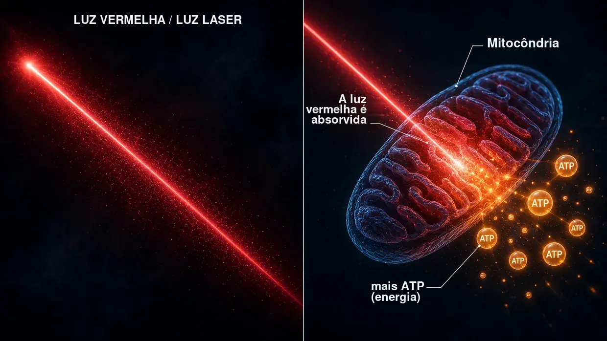
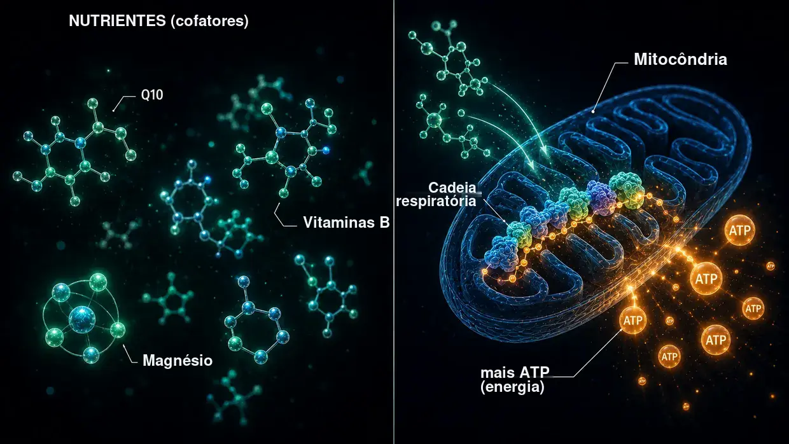

Fontes científicas e evidência clínica
Esta página mostra os alicerces de tudo o que escrevo neste website. O meu modelo é a minha interpretação pessoal do que aconteceu ao nível celular no caso dos meus acufenos. Mas os diferentes elementos — os crosslinkers entre os filamentos de actina nos cílios sensoriais, a ativação das calpaínas pelo ruído, o metabolismo do ATP, a reparação por XIRP2, o Central Gain no cérebro, o eixo HPA local na cóclea, o efeito mitocondrial da Q10, das vitaminas B e da niacina — não são invenções da minha cabeça. Estão documentados na investigação científica e foram testados na prática médica.
Introdução: dois tipos de evidência
Uma nota prévia honesta: reúno nesta página dois tipos de evidência — e coloco-os deliberadamente lado a lado, sem colocar um deles, à partida, acima do outro.
Em primeiro lugar: os estudos sobre mecanismos dos crosslinkers, das calpaínas e afins, provenientes da investigação fundamental. São trabalhos sujeitos a revisão por pares (avaliados por especialistas independentes) em revistas científicas como a Nature Communications, o Journal of Neuroscience, a PNAS ou a eLife. Mostram como funciona a maquinaria celular (ou seja, os processos dentro de cada célula) — como os crosslinkers estabilizam os estereocílios, como as calpaínas são ativadas pelo ruído, como a XIRP2 estabiliza provisoriamente as ruturas, como o aumento do ATP restabelece a audição após danos provocados pelo ruído até onde a capacidade física de cada pessoa o permite. Estes estudos são indispensáveis para compreender o meu modelo dos acufenos causados pelo ruído.
Em segundo lugar: a evidência proveniente da prática clínica de médicos experientes (ou seja, aquilo que médicos experientes viram e documentaram diretamente, ao longo de anos, em doentes reais). São vozes como a do Dr. Lutz Wilden, que trata continuamente doentes com problemas no ouvido interno através de terapia laser de baixa intensidade desde 1987 — portanto, há mais de 35 anos — e mantém audiogramas anteriores e posteriores ao tratamento como documentação padrão. A isto somam-se milhares de utilizadores de laser doméstico em todo o mundo, que acompanham a sua autoterapia com audiometrias de controlo. Na Suíça, desde os anos 90, a Tinnitool também prestou assistência a milhares de doentes segundo a mesma lógica de ação (LLLT → aumento do ATP nas células ciliadas). A isto juntam-se o grupo de Hahn em Praga (540 doentes em dois estudos publicados), a Universidade de Quioto no Japão e um grupo de trabalho brasileiro — em cada caso com melhorias mensuráveis assim que o laser foi suficientemente potente. Mais abaixo, enquadro com honestidade os estudos que, num teste justo, nada encontraram com um laser demasiado fraco. Ou o Dr. Dietrich Klinghardt, com o seu trabalho de décadas sobre cargas de metais pesados e de substâncias tóxicas. Grande parte desta experiência prática não está publicada nas grandes revistas científicas (como a Nature Communications) — e há razões para isso, das quais o próprio Wilden fala. Mas isso em nada altera o facto de, ao longo das últimas décadas, um número verdadeiramente considerável de doentes reais ter recuperado por esta via, com elementos documentais de audiometria.
Porque é que ambas as fontes contam
Considero mais honesto colocar lado a lado ambas as fontes de evidência do que fingir que só o que foi sujeito a revisão por pares constitui a única verdade que se pode levar a sério. Na minha opinião, isso deve-se ao facto de uma grande parte dos fundos de investigação sobre os acufenos ser canalizada sobretudo para o desenvolvimento de aparelhos auditivos e para linhas de desenvolvimento de medicamentos protegidas por patentes. Para combinações de nutrientes não patenteáveis, para protocolos específicos com laser de alta dose ou para protocolos de desintoxicação, simplesmente não existe interesse institucional na investigação.
Não sou médico, nem cientista, nem investigador. Sou alguém que já foi afetado e que ficou curado duas vezes. Li, pesquisei e experimentei imenso, de forma obsessiva. Quando cito aqui um estudo ou um médico, isso não quer dizer que seja uma prova de que o meu caminho funciona no teu caso. Quer dizer que os diferentes elementos em que me baseio são levados a sério na investigação e na prática. Em caso de sintomas agudos — sobretudo acufenos agudos ou perda auditiva — consulta primeiro, por favor, um médico ORL, para esclarecer se existem causas orgânicas.
Uma coisa antes de mais, antes de entrarmos nos pormenores: a constatação mais importante de toda a minha pesquisa é um padrão com que me deparei repetidamente — em todos os casos em que a produção de energia nas células ciliadas foi aumentada de forma percetível, os acufenos melhoraram. Três vias completamente diferentes, um denominador comum. Mostro-te isso em pormenor mais abaixo: quem quiser saltar diretamente para lá pode clicar aqui. Primeiro, levo todos os outros até aos alicerces — como o ouvido é constituído e o que se estraga nesse processo.
Parte 1: estudos mecanísticos provenientes da investigação fundamental
Crosslinkers entre os filamentos de actina nos estereocílios
Na página principal, comparo os cílios sensoriais com um feixe de esparguete cru, mantido unido por pequenas pontes proteicas — os crosslinkers. Estes crosslinkers não são uma invenção minha. São três famílias concretas de proteínas — plastina/fimbrina (PLS1), espina (ESPN) e fascina-2 (FSCN2) — e a sua existência e função nos cílios sensoriais estão documentadas a nível molecular há mais de 20 anos.
Krey JF, Krystofiak ES, Dumont RA, et al. (2016). Plastin 1 widens stereocilia by transforming actin filament packing from hexagonal to liquid. Journal of Cell Biology, 215(4), 467–482. PMID: 27811163. Ligação
O estudo-chave para a quantificação dos crosslinkers. Através de espectrometria de massa, Krey et al. demonstraram que um único estereocílio contém cerca de 30.500 moléculas de plastina-1, 16.100 moléculas de fascina-2 e 14.800 moléculas de espina entre os filamentos de actina. Depois da própria actina, a plastina-1 é a segunda proteína mais abundante em todo o estereocílio. Os ratinhos sem plastina-1 ou fascina-2 funcionais apresentaram uma função auditiva reduzida; os mutantes duplos foram os mais afetados. Os estereocílios sem plastina-1 são mais curtos e mais finos do que os estereocílios do tipo selvagem. Esta é a demonstração experimental direta de que os crosslinkers sustentam efetivamente a integridade estrutural dos cílios sensoriais.
Perrin BJ, Strandjord DM, Narayanan P, et al. (2013). β-Actin and Fascin-2 Cooperate to Maintain Stereocilia Length. Journal of Neuroscience, 33(19), 8114–8121. PMID: 23658152. Ligação
Demonstração direta do que acontece quando a fascina-2 deixa de funcionar: os ratinhos com uma mutação na fascina-2 apresentam perdas auditivas progressivas nas frequências altas e um encurtamento específico da segunda e da terceira fila de estereocílios. Embora a variante mutante da fascina-2 continue a ligar-se à actina, já não consegue interligar eficazmente os filamentos — e é precisamente por isso que os cílios perdem comprimento. É o mesmo efeito estrutural final que descrevo na página principal para a perda de crosslinkers causada pelo ruído, só que aqui simulado por uma mutação genética em vez da clivagem pelas calpaínas.
Sekerková G, Zheng L, Loomis PA, et al. (2004). Espins are multifunctional actin cytoskeletal regulatory proteins in the microvilli of chemosensory and mechanosensory cells. Journal of Neuroscience, 24(23), 5445–5456. PMID: 15190118. Ligação
A caracterização estrutural da espina como crosslinker da actina nos estereocílios. A espina é identificada como uma proteína de agrupamento dos filamentos paralelos de actina e não é inibida pelo cálcio — o que é importante, porque, durante o funcionamento normal, o interior dos estereocílios está sujeito a oscilações de cálcio. Os ratinhos com espinas defeituosas são surdos e têm perturbações do equilíbrio. As mutações da espina também causam surdez hereditária nos seres humanos.
O que tudo isto significa em conjunto: Se os três crosslinkers — plastina/fimbrina, espina e fascina-2 — já provocam perda auditiva e defeitos estruturais nos estereocílios através de uma mutação genética ou de um knockout, é biologicamente plausível que uma clivagem adquirida destes ou de crosslinkers relacionados pelas calpaínas, induzida pelo ruído — como descrevo na página principal — possa ter o mesmo efeito estrutural final.
Ativação das calpaínas pelo ruído
Com o ruído, entra uma enorme quantidade de cálcio na célula ciliada. Esta sobrecarga de cálcio ativa as calpaínas — enzimas proteases dependentes do cálcio que, em seguida, clivam proteínas que interligam a actina. A realidade deste mecanismo está demonstrada por dois laboratórios de investigação independentes, com diferentes inibidores das calpaínas.
Lai R, Fang Q, Wu F, Pan S, Haque K, Sha SH. (2023). Prevention of noise-induced hearing loss by calpain inhibitor MDL-28170 is associated with upregulation of PI3K/Akt survival signaling pathway. Frontiers in Cellular Neuroscience, 17, 1199656. Ligação
Demonstração direta do mecanismo das calpaínas: o ruído ativa a µ-calpaína e a m-calpaína nas células ciliadas, e o inibidor das calpaínas MDL-28170 impede tanto a perda auditiva como a perda de sinapses. O estudo mostra ainda que as calpaínas clivam a proteína estrutural α-fodrina — um reticulador espectrina-actina no córtex celular. Não se trata exatamente do mesmo tipo de crosslinker que as proteínas específicas dos estereocílios, plastina/espina/fascina-2, mas demonstra que as calpaínas são ativadas pelo ruído e atacam proteínas que interligam a actina. A possibilidade de os crosslinkers dos estereocílios também serem afetados é uma hipótese plausível resultante desta convergência.
Yamaguchi T, Yoneyama M, Ogita K. (2017). Calpain inhibitor alleviates permanent hearing loss induced by intense noise by preventing disruption of gap junction-mediated intercellular communication in the cochlear spiral ligament. European Journal of Pharmacology, 803, 187–194. PMID: 28366808. Ligação
Confirma o mecanismo de lesão pelas calpaínas a partir de um segundo laboratório, com outro inibidor (PD150606). Alarga o quadro a um segundo local de lesão: com o ruído, as calpaínas também atacam a comunicação através das junções comunicantes no ligamento espiral — a parede lateral da cóclea. Os danos causados pelo ruído nunca se limitam a um único local.
Leitura de contexto: Fettiplace R, Hackney CM. (2006). The sensory and motor roles of auditory hair cells. Nature Reviews Neuroscience, 7(1), 19–29. — A revisão clássica sobre a estrutura e a função das células ciliadas.
Reparação da actina pela XIRP2 (fase 1)
Wagner EL, Im JS, Sala S, et al. (2023). Repair of noise-induced damage to stereocilia F-actin cores is facilitated by XIRP2 and its novel mechanosensor domain. eLife, 12, e72681. PMID: 37294664. Ligação
O trabalho mecanístico mais importante sobre a autorreparação das células ciliadas. Com o ruído, surgem lacunas («gaps») mensuráveis na estrutura de actina dos cílios sensoriais. Nos ratinhos, estas são fechadas no espaço de uma semana por γ-actina recém-sintetizada. A proteína de reparação XIRP2 reconhece mecanicamente os danos e dá início à reparação. Sem XIRP2, os danos mantêm-se de forma permanente.
Na página principal, descrevo a XIRP2 como «fita adesiva reforçada» que estabiliza provisoriamente os pontos de rutura (fase 1). A verdadeira reparação de fase 2 — produzir actina nova, inserir novos crosslinkers — demora, neste estudo, cerca de uma semana em ratinhos de laboratório perfeitamente nutridos. O que isto significa para um ser humano adulto sob stresse, que ao mesmo tempo está preso na roda de hamster energética, é a questão decisiva — pois muitas vezes falta-lhe precisamente a energia de que esta reparação necessita.
Financiado pelos NIH (R01DC021176).
Aumento do ATP como alavanca de reparação: AC102
Este é o elemento central do meu protocolo para os acufenos causados pelo ruído na vertente farmacológica: se a célula tiver pouca energia, segundo o meu ponto de vista, repara-se demasiado devagar e de forma insuficiente para fazer frente às sobrecargas diárias. Eis os estudos que mostram que esta ideia é levada a sério do ponto de vista farmacêutico — uma empresa farmacêutica de Berlim está atualmente a desenvolver um medicamento que visa precisamente este mecanismo.
Rommelspacher H, Bera S, Brommer B, Ward R et al. (2024). A single dose of AC102 restores hearing in a guinea pig model of noise-induced hearing loss to almost prenoise levels. PNAS, 121(15), e2314763121. PMID: 38557194. Ligação
O estudo central sobre o AC102. Os ensaios in vitro mostraram que o AC102 aumenta claramente a produção celular de ATP e, ao mesmo tempo, reduz as espécies reativas de oxigénio (ROS). No modelo animal, uma única dose melhorou significativamente a audição após um trauma acústico — uma melhoria descrita no título do estudo como «quase até aos níveis anteriores ao ruído» (em concreto: uma melhoria de 13–31 dB perante uma perda auditiva média induzida pelo ruído de 80 dB — significativa, mas sem recuperação completa). Os mecanismos — estimular a produção de ATP, reduzir as ROS, proteger as sinapses — são exatamente a mecânica do meu modelo, só que induzida farmacologicamente.
Tziridis K, Rasheed J, Kwiatkowska M, et al. (2025). A Single Dose of AC102 Reverts Tinnitus by Restoring Ribbon Synapses in Noise-Exposed Mongolian Gerbils. International Journal of Molecular Sciences, 26(11), 5124. Ligação
Aqui testou-se adicionalmente se o AC102 também reverte padrões comportamentais específicos dos acufenos. Resultado: sim, em grande medida — e as sinapses Ribbon entre as células ciliadas e o nervo auditivo recuperaram significativamente. Demonstração direta de que o disparo contínuo de glutamato no nervo auditivo cessa quando a energia celular regressa.
Nieratschker M, Yildiz E, Gerlitz M, et al. (2024). A preoperative dose of the pyridoindole AC102 improves the recovery of residual hearing in a gerbil animal model of cochlear implantation. Cell Death & Disease, 15, 531. Ligação
Alarga a evidência sobre o AC102 a uma segunda via de lesão: o princípio ativo também protege a audição residual em caso de trauma causado por implantação coclear. Isto mostra que o mecanismo atua independentemente do fator desencadeante dos danos — quer se trate de trauma mecânico provocado pelo ruído ou por uma operação, a cascata de emergência celular é a mesma, e a alavanca do ATP funciona em ambos os casos.
AudioCure Pharma GmbH. Clinical Study NCT05776459. O AC102 encontra-se atualmente num estudo de fase 2 à escala europeia em doentes com perda auditiva neurossensorial súbita (SSNHL) — 210 doentes incluídos, recrutamento concluído, resultados ainda por conhecer. Ligação
Stresse, eixo HPA e a cóclea como órgão neuroendócrino
Os acufenos causados pelo stresse são cientificamente mais difíceis de apreender do que os acufenos causados pelo ruído. Para o meu modelo, o ponto decisivo é o seguinte: o stresse crónico geral não gera, através do eixo HPA, um som próprio de acufenos. Mas pode tornar o ouvido interno mais vulnerável. A ativação do sistema nervoso simpático pode reduzir a circulação sanguínea; se os vasos sanguíneos da estria vascular se contraírem, o ouvido interno pode ficar mais vulnerável a danos causados pelo ruído ou por outras influências. Os trabalhos que se seguem sobre o sistema de sinalização local do eixo HPA na cóclea descrevem processos fisiológicos no ouvido interno. Não deduzo daí uma via HPA autónoma que gere acufenos.
Graham CE, Vetter DE. (2011). The mouse cochlea expresses a local hypothalamic-pituitary-adrenal equivalent signaling system and requires corticotropin-releasing factor receptor 1 to establish normal hair cell innervation and cochlear sensitivity. Journal of Neuroscience, 31(4), 1267–1278. PMID: 21273411. Ligação
O estudo-chave. A cóclea dos ratinhos expressa localmente todo o sistema de sinalização do eixo HPA: fator libertador de corticotrofina (CRF), recetor CRF1, ACTH, recetor mineralocorticoide e recetor glucocorticoide. Os ratinhos com knockout do recetor CRF1 apresentam uma inervação alterada das células ciliadas e uma sensibilidade coclear reduzida. Assim, o estudo descreve um sistema de regulação local da cóclea, não a demonstração de uma via HPA autónoma para os acufenos.
Graham CE, Basappa J, Vetter DE. (2010). A corticotropin-releasing factor system expressed in the cochlea modulates hearing sensitivity and protects against noise-induced hearing loss. Neurobiology of Disease, 38(2), 246–258. PMID: 20109547. Ligação
O estudo anterior ao de Graham/Vetter de 2011: mostra que o sistema CRF local da cóclea modula a sensibilidade auditiva e pode proteger contra a perda auditiva causada pelo ruído.
Furuta H, Mori N, Sato C, et al. (1994). Mineralocorticoid type I receptor in the rat cochlea: mRNA identification by PCR and in situ hybridization. Hearing Research, 78(2), 175–180. PMID: 7982810. Ligação
A primeira descrição histórica: os recetores mineralocorticoides são expressos na estria vascular da cóclea — precisamente na «bateria» do ouvido interno, que mantém o reservatório de potássio da endolinfa. Através dos recetores mineralocorticoides, o cortisol pode modular aí a secreção de potássio.
Mazurek B, Haupt H, Olze H, Szczepek AJ. (2012). Stress and tinnitus – from bedside to bench and back. Frontiers in Systems Neuroscience, 6, 47. Ligação
A síntese sistemática da Charité de Berlim: Mazurek e Szczepek reúnem os resultados originais de Graham/Vetter e Furuta em três hipóteses testáveis sobre a forma como o stresse pode desencadear acufenos — através do sistema HPA local da cóclea, através da modulação dos recetores mineralocorticoides na estria vascular pelo cortisol (com consequências para a secreção de potássio) e através da plasticidade mediada pelo glutamato na via auditiva. Estas são as hipóteses dos autores; não as adoto como o meu modelo da origem do som.
Hébert S, Lupien SJ. (2007). The sound of stress: Blunted cortisol reactivity to psychosocial stress in tinnitus sufferers. Neuroscience Letters, 411(2), 138–142. PMID: 17084027. Ligação
Os doentes com acufenos apresentam uma resposta do cortisol atrasada e atenuada perante stresse psicossocial agudo. Assim, o estudo descreve uma reação ao stresse alterada nas pessoas examinadas; não mostra que um esgotamento do eixo HPA cause os acufenos.
Manohar S, Chen GD, Li L, Liu X, Salvi R. (2023). Chronic stress induced loudness hyperacusis, sound avoidance and auditory cortex hyperactivity. Hearing Research, 431, 108726. PMID: 36905854. Ligação
Neste modelo animal, os ratos desenvolveram, sob stresse crónico induzido pelo cortisol, comportamentos de hiperacusia e padrões semelhantes aos dos acufenos no córtex auditivo — sem qualquer exposição aguda ao ruído. Isto não demonstra uma via autónoma para os acufenos causados pelo stresse no meu modelo.
Schaette R, McAlpine D. (2011). Tinnitus with a Normal Audiogram: Physiological Evidence for Hidden Hearing Loss and Computational Model. Journal of Neuroscience, 31(38), 13452–13457. Ligação
No modelo de Central Gain descrito por Schaette e McAlpine, quando o input auditivo é reduzido, o sistema auditivo central aumenta a sua sensibilidade — e gera acufenos como ruído amplificado.
Auerbach BD, Rodrigues PV, Salvi RJ. (2014). Central Gain Control in Tinnitus and Hyperacusis. Frontiers in Neurology, 5, 206.
Eggermont JJ, Roberts LE. (2004). The neuroscience of tinnitus. Trends in Neurosciences, 27(11), 676–682.
Panorâmica do conceito de Central Gain: o cérebro compensa a perda de input periférico através de uma amplificação central — com acufenos e hiperacusia como efeitos secundários. Eggermont/Roberts (clássico): os acufenos estão associados a uma atividade neuronal espontânea alterada e a uma organização tonotópica alterada no córtex auditivo.
Trauma, stresse armazenado e coativação neuronal de vias vizinhas
Uma via central distinta diz respeito à seguinte questão: Como pode um trauma armazenado continuar a desencadear sintomas físicos anos mais tarde — e como pode um foco de stresse local e autónomo no cérebro coativar efetivamente centros nervosos vizinhos?
É precisamente este o mecanismo que Michael Prgomet descreve, para fins didáticos, como «campo de tensão eletrostática» (ver Secção 14). Na minha página sobre os acufenos causados pelo stresse, apresentei o modelo em linguagem simples. Esta secção mostra que os diferentes componentes neurobiológicos subjacentes a este modelo estão bem estabelecidos cientificamente. O que há de original na síntese é a interligação destes componentes num modelo explicativo coerente — os mecanismos individuais estão publicados em revistas com revisão por pares e foram replicados várias vezes.
5.1.1 O trauma deixa vestígios neurobiológicos mensuráveis
Uma experiência de stresse intensa ou crónica altera comprovadamente a estrutura e o funcionamento de determinadas regiões cerebrais. O trauma não permanece «apenas psicológico»; fica fisicamente inscrito nos circuitos do sistema nervoso.
McEwen BS, Nasca C, Gray JD. (2016). Stress Effects on Neuronal Structure: Hippocampus, Amygdala, and Prefrontal Cortex. Neuropsychopharmacology, 41(1), 3–23. PMID: 26076834. Ligação
Descreve que o stresse crónico provoca alterações estruturais e funcionais mensuráveis no hipocampo, na amígdala e no córtex pré-frontal. Estas regiões são precisamente centrais para a memória, o medo, a avaliação e a regulação do stresse — ou seja, exatamente as estruturas que desempenham um papel num padrão de stresse permanentemente ativo.
Sherin JE, Nemeroff CB. (2011). Post-traumatic stress disorder: the neurobiological impact of psychological trauma. Dialogues in Clinical Neuroscience, 13(3), 263–278. PMID: 22034143. Ligação
Revisão dos efeitos neurobiológicos do trauma a longo prazo: hiperreatividade da amígdala, défices de controlo pré-frontal, alterações no hipocampo e alterações duradouras dos sistemas das hormonas do stresse. Portanto, o trauma não «acaba assim que a situação acaba» — fica inscrito nos circuitos do sistema nervoso.
Yehuda R, LeDoux J. (2007). Response Variation following Trauma: A Translational Neuroscience Approach to Understanding PTSD. Neuron, 56(1), 19–32. PMID: 17920012. Ligação
Mostra que o trauma pode alterar a longo prazo o eixo HPA, o sistema noradrenérgico, a reatividade autónoma e o funcionamento do hipocampo. Esta é a base mecanística de padrões de stresse armazenados que podem continuar ativos em segundo plano.
5.1.2 Carga alostática — por que razão só o stresse crónico se torna problemático
O stresse agudo e circunstancial é saudável e facilmente ultrapassável. Os fenómenos que descrevo na página sobre os acufenos causados pelo stresse não surgem numa discussão normal ou perante uma sobrecarga aguda — só surgem quando o sistema já não consegue recuperar e a sobrecarga se acumula ao longo do tempo.
McEwen BS. (1998). Stress, Adaptation, and Disease: Allostasis and Allostatic Load. Annals of the New York Academy of Sciences, 840(1), 33–44. PMID: 9629234. Ligação
Estabelece o conceito de carga alostática. O stresse agudo é útil; a sobrecarga crónica e cumulativa danifica o sistema. É precisamente este ponto que delimita claramente o meu modelo face à afirmação enganadora de que «o stresse causa acufenos em geral». Não se trata do stresse do dia a dia — trata-se de sistemas com uma sobrecarga crónica prévia.
McEwen BS, Stellar E. (1993). Stress and the individual: mechanisms leading to disease. Archives of Internal Medicine, 153(18), 2093–2101. PMID: 8379800.
Descreve os mecanismos através dos quais o stresse crónico leva à doença — através da sobrecarga cumulativa, não de episódios isolados. Explica claramente por que razão nem todas as pessoas com stresse quotidiano desenvolvem estes fenómenos, mas apenas aquelas cujo sistema já está cronicamente desestabilizado.
5.1.3 Sensibilização central — o amplificador no sistema nervoso previamente sobrecarregado
Perante uma sobrecarga crónica, o sistema nervoso central torna-se mais sensível aos estímulos. A inibição diminui, a excitabilidade aumenta e os limiares de estimulação baixam. De repente, estímulos que antes eram sublimiares bastam para desencadear sintomas. Esta é a descrição científica daquilo que, na página sobre os acufenos causados pelo stresse, descrevo como um «sistema previamente sobrecarregado e recetivo aos estímulos».
Woolf CJ. (2011). Central sensitization: Implications for the diagnosis and treatment of pain. Pain, 152(3 Suppl), S2–S15. PMID: 20961685. Ligação
Define a sensibilização central como uma reatividade aumentada dos neurónios centrais a estímulos de entrada normais ou sublimiares. Um pilar consagrado da investigação moderna sobre a dor. O meu modelo transfere este princípio para os acufenos causados pelo stresse.
Latremoliere A, Woolf CJ. (2009). Central sensitization: a generator of pain hypersensitivity by central neural plasticity. The Journal of Pain, 10(9), 895–926. PMID: 19712899. Ligação
Descrição pormenorizada dos mecanismos celulares e moleculares da sensibilização central. Mostra como um sistema previamente sobrecarregado cria, antes de mais, as condições para que pequenos campos de stresse se possam tornar sintomáticos.
Yunus MB. (2008). Central sensitivity syndromes: a new paradigm and group nosology for fibromyalgia and overlapping conditions. Seminars in Arthritis and Rheumatism, 37(6), 339–352. PMID: 18191990. Ligação
Aplica o conceito de sensibilização central à fibromialgia, à fadiga crónica, ao intestino irritável, aos acufenos crónicos e a síndromes relacionadas. É precisamente a ponte que ancora cientificamente o meu modelo dos acufenos causados pelo stresse.
5.1.4 Acoplamento efáptico — coativação elétrica direta de células nervosas vizinhas
Este é o núcleo neurofisiológico duro por detrás da metáfora de Van de Graaff. Quando uma região neuronal dispara com força e de forma síncrona, gera campos elétricos locais que podem efetivamente influenciar células nervosas vizinhas — sem uma sinapse clássica. Com atividade suficiente, estes campos podem empurrar as células vizinhas para além do limiar de estimulação e sincronizar o seu padrão de disparo. É precisamente este o mecanismo por detrás de «o nervo A dispara, o nervo B é arrastado».
Anastassiou CA, Perin R, Markram H, Koch C. (2011). Ephaptic coupling of cortical neurons. Nature Neuroscience, 14(2), 217–223. PMID: 21240273. Ligação
Demonstração experimental direta do acoplamento efáptico no córtex. O estudo mostrou que os campos elétricos extracelulares podem alterar o potencial de membrana dos neurónios vizinhos e sincronizar a temporização dos potenciais de ação. Esta é a demonstração central de que um grupo de células nervosas fortemente ativo pode efetivamente coativar eletricamente as células vizinhas.
Buzsáki G, Anastassiou CA, Koch C. (2012). The origin of extracellular fields and currents — EEG, ECoG, LFP and spikes. Nature Reviews Neuroscience, 13(6), 407–420. PMID: 22595786. Ligação
Revisão fundamental sobre a formação de campos elétricos no cérebro. Descreve como grupos de neurónios com atividade síncrona podem influenciar funcionalmente outros neurónios através de gradientes de tensão. Deixa claro que não se trata de «grandes relâmpagos», como numa esfera de alta tensão — são efeitos de campo pequenos e localmente circunscritos, mas reais e biologicamente ativos.
Fröhlich F, McCormick DA. (2010). Endogenous electric fields may guide neocortical network activity. Neuron, 67(1), 129–143. PMID: 20624597. Ligação
Mostra que os campos elétricos endógenos não se limitam a acompanhar a atividade das redes neuronais, mas também a orientam causalmente. Um grande prego no caixão da ideia de que os efeitos dos campos elétricos no cérebro são apenas um fenómeno secundário.
5.1.5 Kindling — a estimulação repetida abre caminho ao padrão
Quando uma região neuronal é repetidamente estimulada abaixo do limiar, torna-se cada vez mais fácil ativá-la ao longo do tempo — e recruta progressivamente regiões vizinhas. Estabelecido pela investigação sobre a epilepsia e, entretanto, também aplicado a estados crónicos de dor, trauma e irritação.
Goddard GV, McIntyre DC, Leech CK. (1969). A permanent change in brain function resulting from daily electrical stimulation. Experimental Neurology, 25(3), 295–330. PMID: 4981856.
Trabalho original clássico sobre o fenómeno de kindling. A estimulação repetida abaixo do limiar provoca uma alteração permanente do funcionamento cerebral — a região torna-se cada vez mais fácil de ativar ao longo do tempo.
Post RM. (2007). Kindling and sensitization as models for affective episode recurrence, cyclicity, and tolerance phenomena. Neuroscience & Biobehavioral Reviews, 31(6), 858–873. PMID: 17555817. Ligação
Transposição do conceito de kindling para as perturbações afetivas, a perturbação de stresse pós-traumático e os estados de stresse crónico. Explica cientificamente por que razão os padrões de stresse cronicamente reativados não diminuem com o tempo, mas podem tornar-se mais fortes e mais extensos — exatamente o fenómeno que descrevo na página sobre os acufenos causados pelo stresse.
5.1.6 Ativação da glia e neuroinflamação — o amplificador bioquímico
A irritação crónica ativa a microglia e os astrócitos. Estes libertam mensageiros químicos (TNF-α, IL-1β, IL-6) que aumentam de forma mensurável a excitabilidade dos neurónios circundantes — colocando assim toda a região num estado em que é mais fácil ativá-la. Este é o amplificador bioquímico entre «sistema previamente sobrecarregado» e «o campo de stresse pode irromper».
Ji RR, Nackley A, Huh Y, Terrando N, Maixner W. (2018). Neuroinflammation and Central Sensitization in Chronic and Widespread Pain. Anesthesiology, 129(2), 343–366. PMID: 29462012. Ligação
Demonstração direta de como a ativação da glia impulsiona a sensibilização central. A microglia e os astrócitos não são apenas células de suporte passivas — modulam ativamente a excitabilidade neuronal e, em caso de sobrecarga crónica, podem colocar o tecido nervoso num estado permanentemente mais recetivo aos estímulos.
Michopoulos V, Powers A, Gillespie CF, Ressler KJ, Jovanovic T. (2017). Inflammation in Fear- and Anxiety-Based Disorders: PTSD, GAD, and Beyond. Neuropsychopharmacology, 42(1), 254–270. PMID: 27510423. Ligação
A perturbação de stresse pós-traumático e a ansiedade crónica estão associadas a alterações inflamatórias mensuráveis no sistema nervoso. Fecha o círculo: trauma → stresse → neuroinflamação → tecido mais recetivo aos estímulos → ativação mais fácil de padrões de stresse armazenados.
5.1.7 Disritmia talamocortical — relação direta com os acufenos
Nos acufenos crónicos, os estudos de MEG e EEG mostram padrões patológicos de oscilação entre o tálamo e o córtex auditivo. Um padrão de atividade localmente alterado gera acoplamentos theta-gama persistentes que podem contribuir para a perceção duradoura de um som. Esta é a ponte neurofisiológica direta entre um campo de stresse hiperativo e uma perceção duradoura dos acufenos.
Llinás RR, Ribary U, Jeanmonod D, Kronberg E, Mitra PP. (1999). Thalamocortical dysrhythmia: A neurological and neuropsychiatric syndrome characterized by magnetoencephalography. PNAS, 96(26), 15222–15227. PMID: 10611366. Ligação
Estabelece o conceito de disritmia talamocortical como mecanismo de sintomas neurológicos crónicos — medido com tecnologia MEG de alta sensibilidade. Precisamente os aparelhos de MEG com os quais também se podem visualizar campos de tensão elétrica muito pequenos e localmente delimitados no cérebro.
De Ridder D, Vanneste S, Langguth B, Llinás R. (2015). Thalamocortical Dysrhythmia: A Theoretical Update in Tinnitus. Frontiers in Neurology, 6, 124. PMID: 26106362. Ligação
Transposição direta do conceito para os acufenos crónicos, com dados de MEG. Mostra que, em doentes com acufenos crónicos, são mensuráveis acoplamentos theta-gama patológicos no córtex auditivo.
Vanneste S, De Ridder D. (2012). The auditory and non-auditory brain areas involved in tinnitus. An emergent property of multiple parallel overlapping subnetworks. Frontiers in Systems Neuroscience, 6, 31. PMID: 22586375. Ligação
Mostra que os acufenos crónicos estão associados a uma interação alterada entre várias redes cerebrais — auditivas e não auditivas. As redes de stresse e distress estão funcionalmente acopladas às redes auditivas. É esta a ligação através da qual um padrão de stresse hiperativo pode repercutir-se no sistema auditivo.
5.1.8 Reconsolidação da memória — por que razão é possível dissolver antigos padrões de stresse
As memórias emocionais antigas não ficam fixadas para sempre nos circuitos neuronais. Quando são reativadas, entram temporariamente num estado lábil e podem ser armazenadas de novo — modificadas ou descarregadas. Esta é a base científica que explica por que razão métodos como o de Michael Prgomet, a terapia EMDR ou outras abordagens reativadoras podem funcionar.
Nader K, Schafe GE, Le Doux JE. (2000). Fear memories require protein synthesis in the amygdala for reconsolidation after retrieval. Nature, 406(6797), 722–726. PMID: 10963596. Ligação
Trabalho original clássico sobre a reconsolidação da memória. Mostra, no modelo animal, que uma memória de medo já armazenada pode voltar a entrar num estado lábil depois de ser evocada e tem de ser estabilizada de novo — podendo ser modificada de forma direcionada nesse processo.
Lane RD, Ryan L, Nadel L, Greenberg L. (2015). Memory reconsolidation, emotional arousal, and the process of change in psychotherapy: New insights from brain science. Behavioral and Brain Sciences, 38, e1. PMID: 24827452. Ligação
Transposição do conceito para a aplicação terapêutica. Mostra que a reativação direcionada, seguida de um novo processamento, pode modificar antigos programas emocionais. É precisamente este o mecanismo subjacente ao trabalho de Prgomet — embora o seu método específico não esteja demonstrado por ensaios clínicos aleatorizados e controlados (RCT) clássicos.
5.1.9 A síntese: o meu modelo numa imagem
Quando se juntam os diferentes componentes, obtém-se o seguinte quadro geral — e é precisamente isto que descrevo em linguagem simples na minha página sobre os acufenos causados pelo stresse:
- O trauma ou o stresse crónico altera a estrutura cerebral e o eixo HPA → o sistema passa a apresentar uma arquitetura de base alterada (5.1.1)
- A carga alostática acumula-se, o sistema deixa de recuperar → surge uma sobrecarga prévia (5.1.2)
- A sensibilização central torna todo o sistema nervoso mais recetivo aos estímulos → limiares mais baixos (5.1.3)
- A glia e a neuroinflamação reforçam bioquimicamente essa recetividade aos estímulos (5.1.6)
- Um fator desencadeante reativa o padrão de stresse armazenado → a região local dispara com mais força
- O kindling tornou a região cada vez mais reativa ao longo do tempo (5.1.5)
- O acoplamento efáptico permite a coativação elétrica de vias vizinhas (5.1.4)
- Se esta coativação atingir redes de processamento auditivo, pode daí resultar uma perceção sonora real
- A disritmia talamocortical estabiliza este padrão (5.1.7)
- A reconsolidação da memória mostra que estes padrões se podem dissolver quando a fonte original é reativada de forma direcionada e novamente processada (5.1.8)
Cada um destes dez componentes está documentado em publicações sujeitas a revisão por pares e foi replicado várias vezes. O que há de original no meu modelo não é um mecanismo isolado — é a interligação. Na prática ORL estabelecida, esta ligação raramente é pensada como um todo, razão pela qual os acufenos causados pelo stresse são muitas vezes descartados como «apenas psicológicos» ou tratados com medidas isoladas, como a TCC, sem que se explique a mecânica subjacente.
O que esta secção não afirma
Para que tudo fique claro — o que aqui não se afirma:
- Não se afirma que todos os acufenos crónicos sejam causados pelo stresse. Os acufenos causados pelo ruído, os acufenos causados por ototoxicidade e outras formas têm outras causas principais (ver as respetivas secções).
- Não se afirma que o método específico de Michael Prgomet esteja demonstrado por estudos clássicos com revisão por pares (ver Secção 14). O que está demonstrado são os diferentes mecanismos neurobiológicos subjacentes ao seu modelo explicativo.
- Não se afirma que todos os sintomas psicossomáticos em caso de stresse crónico surjam através deste mecanismo exato. Existem inúmeras outras vias.
- Não se faz qualquer promessa de cura. As evoluções individuais podem variar muito.
O que aqui fica registado é o seguinte: os diferentes componentes que sustentam o meu modelo dos acufenos causados pelo stresse estão estabelecidos na ciência.
Acufenos induzidos por medicamentos e substâncias tóxicas
Alguns medicamentos e substâncias nocivas atacam diretamente as células ciliadas. O mecanismo é diferente do que ocorre com o ruído — mas o resultado final a nível celular é, na maioria dos casos, o mesmo: sobrecarga de cálcio das mitocôndrias, deficiência de ATP, apoptose. Convergência do modelo numa segunda via independente.
Salvi R, Ding D, Manohar S, et al. (2022). Salicylate Ototoxicity, Tinnitus, and Hyperacusis. Springer Nature, Handbook of Neurotoxicity. Ligação
A revisão abrangente sobre a ototoxicidade induzida pela aspirina. O salicilato bloqueia a prestina — o motor eletromotriz das células ciliadas externas — e desencadeia centralmente uma reação de acufenos. Uma sobredosagem aguda é reversível; uma dose elevada crónica pode provocar alterações estruturais permanentes.
Sheppard A, Hayes SH, Chen GD, et al. (2014). Review of salicylate-induced hearing loss, neurotoxicity, tinnitus and neuropathophysiology. Acta Otorhinolaryngologica Italica, 34(2), 79–93. Ligação
Análise detalhada dos efeitos do salicilato.
Esterberg R, Linbo T, Pickett SB, et al. (2016). Mitochondrial calcium uptake underlies ROS generation during aminoglycoside-induced hair cell death. Journal of Clinical Investigation. Ligação
Os antibióticos aminoglicosídeos (gentamicina, estreptomicina) são absorvidos pelas células ciliadas e induzem a captação de cálcio pelas mitocôndrias, o que leva a uma produção maciça de ROS. Em termos mecanísticos, é exatamente a cascata cálcio-mitocôndrias que descrevo na página principal — apenas com um desencadeador químico em vez de mecânico.
Jiang M, Karasawa T, Steyger PS. (2017). Aminoglycoside-Induced Cochleotoxicity: A Review. Frontiers in Cellular Neuroscience, 11, 308. Ligação
Panorâmica da toxicidade dos aminoglicosídeos: entrada através de canais mecanotransdutores, danos mitocondriais, apoptose.
Coenzima Q10 e proteção mitocondrial
A Q10 era uma parte integrante do meu protocolo. É um transportador de eletrões na cadeia respiratória mitocondrial e, ao mesmo tempo, um poderoso antioxidante.
Fetoni AR, Piacentini R, Fiorita A, Paludetti G, Troiani D. (2009). Water-soluble Coenzyme Q10 formulation (Q-ter) promotes outer hair cell survival in a guinea pig model of noise induced hearing loss (NIHL). Brain Research, 1257, 108–116. PMID: 19133240. Ligação
Modelo animal: a Q10 reduziu significativamente a apoptose das células ciliadas externas após um trauma acústico.
Staffa P et al. (2014). Activity of coenzyme Q10 (Q-Ter multicomposite) on recovery time in noise-induced hearing loss. Noise and Health. Ligação
Pequeno estudo em seres humanos (30 participantes): a Q10 hidrossolúvel encurtou o tempo de recuperação após a exposição ao ruído e reduziu os acufenos provocados pelo ruído.
Astolfi L et al. (2016). Coenzyme Q10 plus Multivitamin Treatment Prevents Cisplatin Ototoxicity in Rats. PLoS ONE, 11(9), e0162106. PMID: 27632426.
A Q10 combinada com um multivitamínico protegeu ratos contra danos ototóxicos causados pelo medicamento quimioterápico cisplatina — o mesmo mecanismo de proteção numa terceira via.
Magnésio e vitamina B12
Cevette MJ, Barrs DM, Patel A, et al. (2011). Phase 2 study examining magnesium-dependent tinnitus. International Tinnitus Journal, 16(2), 168–173. PMID: 22249877. Ligação
Estudo da Mayo Clinic: a administração diária de 532 mg de magnésio durante três meses levou a uma redução significativa das pontuações de impacto dos acufenos.
Singh C, Kawatra R, Gupta J, et al. (2016). Therapeutic role of Vitamin B12 in patients of chronic tinnitus: A pilot study. Noise & Health, 18(81), 93–97. Ligação
Estudo-piloto duplamente cego: 42,5 % dos doentes com acufenos tinham deficiência de vitamina B12. Os doentes que tinham uma deficiência e foram tratados com injeções de B12 apresentaram melhorias significativas.
Shemesh Z, Attias J, Ornan M, et al. (1993). Vitamin B12 deficiency in patients with chronic-tinnitus and noise-induced hearing loss. American Journal of Otolaryngology, 14(2), 94–99. PMID: 8484483. Ligação
A primeira descrição histórica: 47 % das pessoas com acufenos e perda auditiva induzida pelo ruído tinham deficiência de B12 — face a 27 % das pessoas com danos auditivos causados pelo ruído sem acufenos e apenas 19 % das pessoas com audição normal.
Biodisponibilidade e absorção de nutrientes
Na minha página sobre biodisponibilidade explico porque, nas pessoas com stresse crónico, a forma e o modo de administração dos nutrientes são muitas vezes mais importantes do que a lista de ingredientes. A fisiologia subjacente está bem estabelecida — é a base da terapia de reidratação oral utilizada em todo o mundo, que salvou milhões de vidas desde a década de 1960.
Loo DDF, Zeuthen T, Chandy G, Wright EM. (1996). Cotransport of water by the Na+/glucose cotransporter. PNAS. Ligação
O trabalho fundamental sobre o cotransportador SGLT1: em cada ciclo de transporte, o sódio, a glicose e cerca de 260 moléculas de água são bombeados simultaneamente para o organismo.
Buccigrossi V et al. (2020). Potency of Oral Rehydration Solution in Inducing Fluid Absorption is Related to Glucose Concentration. Scientific Reports, 10, 7803. Ligação
Nem todas as misturas de sódio e glicose atuam da mesma forma — a proporção ideal situa-se em cerca de 60 mmol/L de sódio e 111 mmol/L de glicose. A formulação tem de ser ajustada com precisão.
Ratinhos vs. seres humanos — porque interpreto os modelos animais com cautela
Valero MD, Burton JA, Hauser SN, et al. (2017). Noise-induced cochlear synaptopathy in rhesus monkeys (Macaca mulatta). Hearing Research, 353, 213–223. PMID: 28712672. Ligação
Nos primatas, mediu-se uma perda de sinapses de 12–27 % após a exposição ao ruído — em comparação com 40–55 % nos ratinhos. Os primatas (e, portanto, provavelmente também os seres humanos) são menos gravemente afetados por uma única exposição ao ruído do que os ratinhos.
Mas cuidado com a conclusão inversa: uma menor vulnerabilidade inicial não significa automaticamente uma melhor capacidade de reparação. Pelo contrário — em condições quotidianas, o ser humano combina uma menor reparação espontânea (devido ao stresse, à falta de sono e a um aporte deficiente) com um historial de danos maior e mais antigo. Esta é uma tese central da minha argumentação.
O fio condutor: aumento do ATP = melhoria dos acufenos
Antes de entrar nas secções detalhadas, quero mostrar-te a constatação central subjacente a tudo. Se houver apenas uma coisa que deves retirar desta página de fontes, é esta:
Sempre que, nas últimas décadas, em qualquer parte do mundo — fosse por que via fosse — a produção de ATP nas células ciliadas do ouvido interno aumentou, os acufenos melhoraram.
Isto não é uma teoria nem uma ideia ditada pelo desejo. É a constatação consistente de três vias terapêuticas completamente independentes, investigadas e aplicadas por cientistas e médicos em pelo menos dez países diferentes, com métodos diferentes, em diferentes coortes de doentes. Eis as três vias — todas conduzem ao mesmo ponto final bioquímico.
Via 1: aumento do ATP através da luz laser (fotobiomodulação / LLLT)

A luz laser na faixa dos 600–900 nm é absorvida pela citocromo c oxidase na cadeia respiratória das mitocôndrias. O efeito bioquímico: mais ATP, menos stresse oxidativo, e a célula consegue sair do modo de emergência energética.
Principais representantes desta via:
- Dr. Lutz Wilden, Bad Füssing/Ibiza, desde 1987 — tratou milhares de doentes com acufenos com laser de alta dose de 830 nm, documentou audiometrias e publicou resultados clínicos (detalhes e enquadramento honesto na secção 12)
- Grupo de Hahn, Universidade Carolina de Praga, 2001/2012 — 420 doentes no maior de dois estudos, 56,7 % de melhoria objetiva dos acufenos, em média 30 dB, através da combinação de laser + Ginkgo (EGb 761) (apoia a terapia combinada, não a monoterapia com laser)
- Tauber et al., LMU Munique, 2003 — sistema TCL para irradiação transmeatal da cóclea
- Cuda & De Caria, Itália, 2008 — combinação de aconselhamento e LLLT
- Teggi et al., San Raffaele Milão, 2008/2009 — LLLT na doença de Ménière
- Mollasadeghi et al., Irão, 2013 — RCT duplamente cego em acufenos causados pelo ruído, significativo
- Shiomi et al., Universidade de Quioto, 1997 — 40 mW, 830 nm, transmeatal, pioneiros
- Panhóca et al., Brasil, 2023 — RCT comparativo, LLLT como procedimento mais eficaz
→ Para todos os detalhes, ver a secção 11: lógica da dose da LLLT, e a secção 12: Dr. Wilden.
Via 2: aumento do ATP através de fármacos (AC102)
Uma substância farmacológica desenvolvida em Berlim, que intervém diretamente na produção mitocondrial de ATP e, ao mesmo tempo, elimina espécies reativas de oxigénio (moléculas residuais agressivas que atacam a célula por dentro — uma espécie de ferrugem celular). A indústria farmacêutica retoma aqui aquilo que Wilden e Hahn fazem há décadas — mas sob a forma de um medicamento patenteável.
Principais representantes desta via:
- Rommelspacher et al., AudioCure Pharma Berlim, revista científica PNAS 2024 — uma única dose melhora claramente a audição após trauma acústico no modelo animal (significativamente, mas sem recuperação completa), aumenta o ATP, reduz as espécies reativas de oxigénio (ferrugem celular) e protege as sinapses
- Tziridis et al., revista científica Int. J. Mol. Sci. 2025 — as sinapses Ribbon (os pontos de contacto finos através dos quais as células ciliadas transmitem o seu sinal ao nervo auditivo) recuperam, e os padrões comportamentais específicos dos acufenos diminuem
- Nieratschker et al., revista científica Cell Death & Disease 2024 — eficaz também em trauma de implantação coclear
- Estudo clínico de fase 2 NCT05776459 — em toda a Europa, com 210 doentes com SSNHL (pessoas com perda auditiva neurossensorial súbita, ou seja, perda auditiva repentina no ouvido interno)
→ Para todos os detalhes, ver a secção 4.
Via 3: aumento do ATP através de nutrientes

Cofatores mitocondriais que apoiam diretamente ou desbloqueiam a cadeia respiratória. Sem Q10 suficiente, o transporte de eletrões entre os complexos I/II e o complexo III não funciona. Sem B12 suficiente, as fibras nervosas sofrem desmielinização, incluindo as do nervo auditivo. Sem magnésio suficiente, cerca de 600 reações enzimáticas não funcionam, incluindo a própria síntese de ATP. Antioxidantes como as vitaminas C e E, o selénio, o zinco e o ácido alfa-lipoico protegem a célula das espécies reativas de oxigénio que se formam em consequência do modo de emergência energética.
3.1 Cofatores mitocondriais clássicos (Q10, magnésio, B12)
- Fetoni et al., Brain Research 2009 — a Q10 reduz significativamente a apoptose das células ciliadas externas após trauma acústico
- Staffa et al., Noise & Health 2014 — a Q10 encurta o tempo de recuperação após exposição ao ruído e reduz os acufenos
- Astolfi et al., PLOS One 2016 — Q10 mais multivitamínico protege contra a ototoxicidade da cisplatina
- Cevette et al., Mayo Clinic 2011 — 532 mg de magnésio ao longo de 3 meses reduzem significativamente o impacto dos acufenos (importante: estudo aberto sem controlo por placebo, portanto importante para orientar a investigação, mas não uma prova definitiva, dado que os acufenos apresentam uma forte evolução espontânea e um forte efeito placebo)
- Singh et al., Noise & Health 2016 — 42,5 % dos doentes com acufenos têm deficiência de B12; a suplementação produz uma melhoria significativa nos doentes com deficiência
- Shemesh et al., 1993 — primeira descrição histórica da relação entre a B12 e os acufenos
→ Para todos os detalhes, ver as secções 7 e 8.
3.2 Niacina / vitamina B3 / NAD+ — a alavanca mais direta de todas para aumentar o ATP
As doses aqui referidas provêm de estudos publicados e não constituem recomendações de automedicação. Antes de qualquer suplementação — sobretudo em doses mais elevadas — fala com o teu médico.
A niacina (vitamina B3, nas suas formas de ácido nicotínico, nicotinamida e ribósido de nicotinamida) é o precursor metabólico direto do NAD+ e do NADH — as coenzimas da cadeia respiratória mitocondrial. Sem NAD+ suficiente, o ciclo de Krebs não consegue fornecer eletrões à cadeia respiratória e, sem esses eletrões, não se produz ATP. Assim, a niacina não é simplesmente «mais um nutriente para os acufenos», mas um precursor direto da produção de ATP nas células ciliadas. Se o meu modelo estiver certo — os acufenos crónicos são uma crise energética da célula ciliada —, então a suplementação com niacina deveria ajudar. Para manter aqui a honestidade científica: os estudos clínicos diretos sobre niacina e acufenos são antigos (predominantemente das décadas de 1940 a 1980) e, na sua maioria, não controlados. Embora existam relatos positivos de décadas oriundos da prática naturopática, não há nenhum RCT moderno e duplamente cego que prove que a niacina melhora os acufenos em seres humanos. No plano mecanístico, porém, a abordagem está extremamente bem sustentada, ainda que, no plano clínico, não esteja definitivamente comprovada para os acufenos em seres humanos (neste caso, a confiança assenta na via da prática clínica).
O rubor provocado pela niacina (flush de niacina) — e porque é biologicamente importante
Quem toma ácido nicotínico pela primeira vez (sobretudo em jejum ou em doses mais elevadas a partir de 100 mg) sente, ao fim de 15–30 minutos, o famoso e famigerado rubor provocado pela niacina: a pele aquece, fica com formigueiro e avermelha do rosto ao peito, por vezes até às coxas. Parece uma queimadura solar e sente-se como uma acumulação de calor. Dura 30–60 minutos, é inofensivo e desaparece por si só. Da primeira vez, pensa-se: «Estou a morrer.» Da segunda: «Ah, então é isto o rubor.» Da terceira: «Afinal, nem é assim tão mau.»
O que acontece aqui: o ácido nicotínico liberta no organismo as prostaglandinas D2 e E2 — mensageiros químicos que dilatam os vasos sanguíneos. O rubor é, assim, o sinal visível de que a substância está biologicamente ativa e estimula a circulação sanguínea. É precisamente por isso que o ácido nicotínico original (com rubor) é tão valioso para o meu modelo — ao contrário da forma sem rubor (nicotinamida), que também é convertida em NAD+, mas não dilata os vasos sanguíneos. Até onde chega este efeito — se apenas à pele ou em profundidade nos tecidos —, foi o que investiguei em detalhe na secção seguinte.
Indicações práticas:
- Com o tempo, o corpo habitua-se e o rubor torna-se mais fraco
- Para doses baixas de manutenção, o ácido nicotínico não tamponado depois das refeições é o caminho mais correto
Até onde chega a circulação sanguínea? — Apenas à pele ou também em profundidade e de forma sistémica, até ao ouvido interno?
Não encontrei nenhum estudo em seres humanos que mostre que o ácido nicotínico chega ao ouvido interno e aí aumenta a circulação sanguínea. Ainda assim, há muitos indícios que apontam precisamente nesse sentido.
Está bem documentado que o ácido nicotínico pode estimular a circulação sanguínea — numa dose suficiente, sente-se imediatamente no rosto incandescente. Por isso, a questão interessante não é sequer se produz algum efeito, mas até onde chega: fica por um mero fenómeno superficial da pele — ou penetra também em profundidade nos tecidos e sistemicamente por todo o corpo, até a regiões como o ouvido interno?
Primeiro, a biologia — porque é que a via está sequer aberta. Antes de mostrar os estudos — e um relato fascinante da prática de um médico, que me deixou verdadeiramente estupefacto —, vale a pena olhar primeiro para o mecanismo, pois este explica porque é que tudo isto faz sentido.
Quando se absorve ácido nicotínico suficiente, este circula no sangue e chega aos tecidos. No entanto, não abre os vasos por si só — é um fator desencadeante: leva as células imunitárias a libertar mensageiros químicos, as prostaglandinas D2 e E2. A quantidade libertada depende da quantidade de ácido nicotínico que chega ao sangue — ou seja, da dose e da biodisponibilidade.
Estes dois mensageiros desempenham papéis diferentes:
- A D2 é o primeiro impacto, rápido e forte. É responsável pela onda visível — a vermelhidão, o calor, o formigueiro.
- A E2 surge depois e atua durante mais tempo. Prolonga o efeito quando a vermelhidão visível já desapareceu há muito.
O rubor não é, portanto, o fim do efeito — é apenas a sua parte visível.
Hanson J, Gille A, Zwykiel S, et al. (2010). Nicotinic acid- and monomethyl fumarate-induced flushing involves GPR109A expressed by keratinocytes and COX-2-dependent prostanoid formation in mice. Journal of Clinical Investigation, 120(8), 2910-2919. DOI: 10.1172/JCI42273. Ligação
Estes mensageiros atuam depois nos tecidos circundantes. Mas apenas onde se encontram os recetores adequados — as fechaduras para estas chaves. Quando são ativados, os vasos sanguíneos dilatam-se.
E é importante: estas mesmas fechaduras foram comprovadas no ouvido interno. Aí, apontam para uma dilatação — e foi precisamente isso que, como veremos já a seguir, o modelo animal também mediu diretamente.
Assim, a via está biologicamente aberta: se a substância chegar ao sangue em quantidade suficiente, é distribuída amplamente pelo organismo → as células imunitárias produzem o mensageiro → a fechadura adequada está presente no ouvido interno → e, onde a chave encaixa na fechadura, o vaso sanguíneo dilata-se.
Stjernschantz J, Wentzel P, Rask-Andersen H (2004). Localization of prostanoid receptors and cyclo-oxygenase enzymes in guinea pig and human cochlea. Hearing Research, 197(1-2), 65-73. DOI: 10.1016/j.heares.2004.04.018. Ligação
Nakagawa T (2011). Roles of prostaglandin E2 in the cochlea. Hearing Research, 276(1-2), 27-33. DOI: 10.1016/j.heares.2011.01.015. Ligação
Um padrão que atravessa tudo. O ácido nicotínico abre os vasos sanguíneos mesmo quando o corpo os quer manter contraídos. Isto vê-se em qualquer pessoa saudável de dezoito anos: em repouso, o corpo mantém deliberadamente contraídos os vasos sanguíneos da pele — como proteção contra a perda de calor e para regular a circulação. O ácido nicotínico sobrepõe-se a isso e intensifica a circulação sanguínea para além desse estado de repouso. É precisamente por isso que surgem a vermelhidão e o calor — o rubor é o sinal visível desse efeito.
E não te preocupes: depois não ficas o dia inteiro com a cabeça de um vermelho vivo. A vermelhidão visível — a rápida onda de D2 — desaparece ao fim de cerca de meia hora a uma hora.
E este é o ponto decisivo: se o ácido nicotínico já se sobrepõe a uma ordem ativa do corpo para contrair os vasos sanguíneos, porque haveria de parar precisamente perante um vaso do ouvido interno contraído pelo stresse?
Porque é que, na minha perspetiva, isto é particularmente relevante para quem tem acufenos. E chegamos assim ao que realmente me interessa.
Segundo a minha pesquisa, quem tem acufenos está quase sempre sob enorme tensão — afinal, são os próprios acufenos que a provocam: medo, sono pior, escuta constante do som. Por isso, o sistema nervoso entra em sobreativação e mantém-se nesse estado. E um sistema nervoso permanentemente sobreativado (sistema simpático) contrai os vasos sanguíneos.
É precisamente este o círculo vicioso, tal como eu o entendo: chega assim menos sangue ao ouvido interno — e, com ele, também menos nutrientes e oxigénio. Isso, por sua vez, reduz a energia urgentemente necessária para a recuperação.
Agora, os estudos — e a ligação que me deixou estupefacto. Um estudo em ratos reproduziu precisamente este estado. Nesse estudo, o sistema simpático foi estimulado artificialmente, o que fez contrair os vasos sanguíneos do ouvido interno. E só então o ácido nicotínico mostrou o seu efeito mensurável.
Portanto, o efeito torna-se mais evidente precisamente onde antes chegava pouco sangue. E também Atkinson — de quem falarei já a seguir — tratou especificamente os doentes cujos vasos sanguíneos considerava contraídos e foi neles que observou os seus sucessos.
1 — Profunda e sistémica, não apenas na pele (seres humanos). Quando se mediu, em pessoas saudáveis, a circulação sanguínea em profundidade no antebraço (não à superfície da pele), esta quadruplicou depois de uma dose de ácido nicotínico. E, logo a seguir, a evidência do mecanismo: com um inibidor das prostaglandinas, o efeito diminuiu para um terço — a dilatação ocorre, portanto, através da cadeia das prostaglandinas, exatamente como descrito acima.
Kaijser L, Eklund B, Olsson AG, Carlson LA (1979). Dissociation of the effects of nicotinic acid on vasodilatation and lipolysis by a prostaglandin synthesis inhibitor, indomethacin, in man. Medical Biology, 57(2), 114-117. PMID: 376964. Ligação
2 — Tornada visível num órgão sensorial com barreira protetora (em seres humanos, num estudo duplamente cego). Aquilo que não é possível fazer no ouvido interno humano — olhar diretamente para dentro — é possível fazer no olho: um órgão sensorial delicado, com a sua própria barreira hematotecidular, tal como o ouvido interno. Sob o efeito da niacina, as arteríolas da retina dilataram-se de forma mensurável (+5,3 % após 30 minutos, +5,8 % após 90 minutos), e o volume sanguíneo na coroide registou um aumento de +24 % — tudo documentado em dupla ocultação. A objeção de que «a barreira protetora impedirá certamente o efeito» deixa, assim, de se sustentar.
Barakat MR, Metelitsina TI, DuPont JC, Grunwald JE (2006). Effect of niacin on retinal vascular diameter in patients with age-related macular degeneration. Current Eye Research, 31(7-8), 629-634. DOI: 10.1080/02713680600760501. Ligação
Metelitsina TI, Grunwald JE, DuPont JC, Ying G-S (2004). Effect of niacin on the choroidal circulation of patients with age related macular degeneration. British Journal of Ophthalmology, 88(12), 1568-1572. DOI: 10.1136/bjo.2004.046607. Ligação
Nuance honesta: no estudo da coroide, o volume sanguíneo aumentou, mas o fluxo sanguíneo permaneceu estatisticamente inalterado. A constatação relativa à retina — os vasos sanguíneos dilatam-se — não é afetada por isso.
3 — Medida diretamente no ouvido interno (animal). Este é o estudo que já mencionei acima — agora, com a respetiva evidência. O fluxo sanguíneo na cóclea foi medido diretamente: nos ratos cujos vasos não tinham sido artificialmente contraídos, não foi detetado qualquer efeito relevante; já nos vasos do ouvido interno artificialmente contraídos, verificou-se um aumento significativo.
Hultcrantz E, Hillerdal M, Angelborg C (1982). Effect of nicotinic acid on cochlear blood flow. Archives of Oto-Rhino-Laryngology, 234(2), 151-155. DOI: 10.1007/BF00453622. Ligação
E agora, os seres humanos — um médico que, em 1944, pensou o mesmo que eu
Até aqui, falámos de mecanismos e valores medidos: mensageiros químicos, recetores, fluxo sanguíneo no animal, diâmetro dos vasos sanguíneos no olho. Esta é uma metade. A outra metade é a questão do que tudo isto realmente produz em pessoas reais com sintomas reais. E foi precisamente aí que, ao investigar, encontrei algo que me deixou sem palavras: um trabalho de 1944.
Atkinson M. (1941). Observations on the etiology and treatment of Meniere's syndrome. Journal of the American Medical Association, 116, 1753-1760.
Atkinson M. (1944). Meniere's syndrome: results of treatment with nicotinic acid in the vasoconstrictor group. Archives of Otolaryngology, 40(2), 101-107.
Atkinson M. (1944). Tinnitus aurium: observations on its nature and control. Annals of Otology, Rhinology, and Laryngology, 53, 742-751.
Atkinson M. (1947). Tinnitus aurium: some considerations on its origin and treatment. Archives of Otolaryngology, 45, 68-76. PMID: 20284478.
Atkinson M. (1948). Meniere's syndrome: observations on vitamin deficiency as the causative factor. II. The cochlear disturbances. Archives of Otolaryngology, 50, 564-588. PMID: 15393403.
O otologista nova-iorquino Miles Atkinson tratou 110 doentes com doença de Ménière exclusivamente com ácido nicotínico. E a doença de Ménière é quase sempre acompanhada de acufenos — os acufenos são uma parte integrante do quadro clínico. É precisamente por isso que o trabalho dele é tão interessante para o meu tema: não tratou uma doença qualquer apenas relacionada, mas pessoas cujo quadro também incluía acufenos.
A sua justificação para ter escolhido precisamente o ácido nicotínico parece antecipar o meu próprio modelo: considerava que os sintomas deste grupo de doentes eram consequência de uma falta de oxigénio no ouvido interno, causada por vasos sanguíneos contraídos — e concluiu daí que o tratamento exigia, logicamente, uma substância vasodilatadora.
E duas coisas que escreveu a este respeito deixaram-me estupefacto.
Primeiro: não via o rubor como um efeito secundário, mas como o princípio de ação. Escolheu o ácido nicotínico precisamente porque, na sua opinião, o seu efeito alcançava até os vasos sanguíneos mais finos — como os que se encontram, entre outros locais, no ouvido interno — e, para ele, a vermelhidão visível da pele era exatamente o sinal disso. Escreveu que este efeito era o pretendido, porque suspeitava que a perturbação se encontrava precisamente aí: nos capilares mais finos da estria vascular — a rede vascular na parede lateral da cóclea que abastece o metabolismo energético do ouvido interno. Exatamente a ideia que exponho nesta página oitenta anos mais tarde.
E é precisamente aqui que, para mim, o círculo se fecha. Quando se colocam as peças lado a lado, surge um quadro que, na verdade, já não permite outra interpretação:
- Está comprovado que o ácido nicotínico abre os vasos sanguíneos mais pequenos — isso vê-se no rubor e faz parte dos factos biológicos relativos ao ácido nicotínico que descrevi acima.
- A estria vascular é precisamente uma rede de capilares extremamente finos. Não é um tecido especial nem um órgão de exceção.
- Não há razão para supor que aí existam subitamente recetores totalmente diferentes dos que existem em qualquer outro vaso fino do corpo. A densidade destes recetores — ou seja, das fechaduras — pode variar. O plano estrutural não. E os recetores adequados estão, de facto, comprovados no ouvido interno humano.
- E, numa dose suficiente, o ácido nicotínico distribui-se amplamente pelo corpo — isso vê-se pelo facto de o rosto, as orelhas, o pescoço e o tronco também reagirem.
Somando tudo isto, a hipótese menos provável seria a de que o ácido nicotínico atuasse nos vasos sanguíneos mais finos de todo o corpo — exceto precisamente na cóclea.
E ajustava a dose de forma coerente com esse efeito. Atkinson indica dois princípios fundamentais do seu tratamento: primeiro, produzir o efeito vasodilatador — e, segundo, mantê-lo de forma contínua até os sintomas estarem sob controlo, o que podia demorar muitos meses. Na prática, procedia assim: começava por uma dose de teste para ver com que intensidade cada doente reagia. Essa reação era a sua referência. Depois, aumentava gradualmente até à quantidade que o doente tolerava.
Por isso, subia deliberadamente a dose tanto quanto fosse necessário para que o efeito surgisse — não a mantinha tão baixa quanto teria sido cómodo. E isto também explica, na minha opinião, algo importante: estudos posteriores que utilizaram quantidades menores e não provocaram rubor testaram algo que não correspondia ao verdadeiro objeto em causa.
Segundo: é aqui que se torna verdadeiramente interessante. Atkinson tinha à disposição ambas as formas de B3. A amida — a B3 sem rubor — não produziu qualquer efeito nos seus doentes. O ácido produziu. Ambas são a mesma vitamina. Portanto, não pode ter sido o efeito vitamínico que ajudou — caso contrário, a amida teria funcionado da mesma forma. Resta a única coisa que o ácido faz e que a amida não faz: estimula a circulação sanguínea. Deste modo, Atkinson forneceu, sem o ter planeado, a comparação mais rigorosa que se poderia desejar. E, acessoriamente, isto explica porque é que muitos estudos posteriores não encontraram nada — testaram a forma errada.
Os resultados. Dos seus 110 casos (período de observação: seis meses a três anos):
- Tonturas: aliviadas ou claramente melhoradas em 84 % dos casos (desapareceram por completo em 38 %)
- Acufenos: melhoraram em cerca de metade dos casos (52 %; desapareceram por completo em 12 %)
- Perda auditiva: melhorou em pouco menos de um quarto dos casos (22 %; desapareceu por completo em 2 %)
E o que é notável: Atkinson tinha uma única alavanca à sua disposição — a circulação sanguínea. Os seus doentes continuaram a alimentar-se normalmente, mas não receberam nada adicional: nenhuma terapia concomitante, nenhum aporte adicional e direcionado de nutrientes. É precisamente isso que torna a sua constatação tão limpa — não há mais nada a que estes resultados possam ser atribuídos.
E agora, o número que, à primeira vista, é o mais fraco — e que, apesar disso, mais me ocupou: a perda auditiva.
Era o ponto mais fraco de Atkinson, algo que ele próprio afirma com toda a franqueza. Mas, para mim, é precisamente aí que reside o mais notável: ter havido sequer alguma melhoria. Perante danos que ainda hoje são considerados definitivos, a verdadeira pergunta não é «em quantas pessoas melhorou a perda auditiva?», mas «melhorou em alguém?» — e a resposta é: sim, de forma mensurável, documentada no audiograma. Tal como aconteceu comigo oitenta anos mais tarde.
O caso que me deixou sem palavras. Atkinson apresenta as curvas auditivas de um homem de 39 anos em quatro momentos — e, para mim, esta evolução é a parte mais forte de todo o trabalho:
- Primeiro exame (dez. de 1941): em grande parte, o ouvido afetado apresenta cerca de 50 decibéis de perda auditiva.
- Após o tratamento (jun. de 1942): a mesma curva situa-se em cerca de 20–25 decibéis.
- Recaída (nov. de 1942): a curva volta a cair — para cerca de 55 a 65 decibéis, portanto abaixo do valor inicial.
- Após o restabelecimento do tratamento (dez. de 1943): volta a subir. Atkinson descreve a audição, nesse momento, como praticamente normal e os acufenos apenas como ligeiros.
E é precisamente esta recaída que é o ponto decisivo. Uma audição que melhora, volta a piorar e volta a melhorar — sempre ao ritmo do tratamento — não segue o acaso. Segue a dose. As flutuações diárias situam-se na ordem de poucos decibéis, não de trinta — e muito menos duas vezes na mesma direção, enquanto se atua sobre a mesma alavanca.
E como explico isto? Para isso, é preciso compreender o que um audiograma realmente mede: não quantas células ciliadas ainda existem, mas quão bem funcionam. Uma célula ciliada energeticamente de rastos não está morta. Apenas reage pior às ondas sonoras que chegam — e é precisamente isso que se traduz numa curva pior do que o verdadeiro estado do ouvido justificaria.
Quando o sangue chega, estas células voltam a funcionar. Quando deixa de chegar, voltam a piorar. É precisamente esta subida e descida que se vê nas curvas.
Isto não significa expressamente que não existam perdas reais de células ciliadas nas pessoas com acufenos — elas existem, sem qualquer dúvida, embora não em todas as pessoas. Mas uma parte daquilo que surge no audiograma como «perda» pode ser simplesmente um aporte insuficiente. E um aporte insuficiente é reversível.
Também é notável aquilo que não recuperou: a queda por volta dos 4.000 hertz mantém-se em todas as quatro medições. Quanto ao motivo, só posso especular. Talvez aí se tivessem perdido células de forma efetivamente definitiva, deixando de ser possível recuperá-las. Talvez a recuperação precisasse simplesmente de mais tempo do que o período de observação permitiu — por experiência, as frequências altas são as que demoram mais tempo. E talvez este homem continuasse exposto a um ruído que incidia precisamente nessa gama de frequências. Em suma: não se sabe.
E ainda um pormenor de outro caso: um doente descreve que toma 100 mg em jejum porque isso provoca um rubor intenso e uma sensação de maior bem-estar — e que a cabeça fica imediatamente mais lúcida depois de uma injeção. O rubor como sinal percetível de que a substância está a atuar. Também conheço isso por experiência própria.
O que não estou a afirmar com isto. Não digo que isto aconteça assim em todas as pessoas. Atkinson relata abertamente os insucessos: num dos três casos que descreve em detalhe, as tonturas desapareceram, mas permaneceram acufenos de alta frequência — o doente continuou a sentir-se muito afetado por eles, e Atkinson classifica expressamente este caso como um fracasso.
Para mim, isto não é uma contradição, mas uma confirmação da minha abordagem: a circulação sanguínea, por si só, não basta. Quem continua exposto ao ruído, quem permanece sob stresse contínuo, quem carece de nutrientes, quem não dorme — nessas pessoas, uma única alavanca tem demasiados fatores contra si. Um sistema sob pressão em vários pontos não é reparado por um único parâmetro.
Mas o que este trabalho me mostra é isto: o potencial existe. Este doente não era um caso biológico excecional — era um ser humano como qualquer outro. Se um ouvido consegue fazê-lo, então essa capacidade faz parte do plano estrutural. O que falta são as condições certas.
O que tudo isto significa — e onde está o limite
Organizando tudo com honestidade:
- Está estabelecido: o ácido nicotínico aumenta a circulação sanguínea profunda e sistémica (a circulação sanguínea no antebraço quadruplicou) e dilata os vasos finos de um órgão sensorial com barreira protetora (olho, duplamente cego). Medido objetivamente.
- Biologicamente coerente: conhece-se toda a via desde a célula imunitária até ao vaso sanguíneo — e os recetores adequados encontram-se comprovadamente no ouvido interno humano.
- Medido no órgão-alvo: quando os vasos sanguíneos estão contraídos, a circulação sanguínea na cóclea aumenta de forma diretamente mensurável — demonstrado no modelo animal.
- E depois há Atkinson: um médico tratou 110 pessoas exclusivamente com ácido nicotínico — nada mais, nenhuma terapia concomitante — e documentou um efeito num quadro clínico localizado no ouvido interno. Incluindo curvas auditivas que subiam, desciam e voltavam a subir ao ritmo do tratamento. Se uma substância cujo principal efeito conhecido é a vasodilatação produz efeitos precisamente aí, então é muito provável que atue exatamente aí: no ouvido interno. Para mim, esta é a explicação mais óbvia, e não vejo nenhuma melhor.
- De forma aberta e honesta: na minha pesquisa, não encontrei uma medição direta da circulação sanguínea no ouvido interno humano sob o efeito do ácido nicotínico — o que não significa que não exista em lado nenhum.
Para mim, tudo isto forma um quadro coerente — não está «comprovado», mas é uma convicção bem fundamentada que defendo de cabeça erguida.
E o que acontece quando se medem realmente os acufenos? — Flottorp & Wille, 1955
Atkinson não foi o único. Onze anos mais tarde, uma equipa de investigação norueguesa debruçou-se sobre a mesma questão — e deu um passo metodológico decisivo.
É que existe um problema fundamental nos acufenos: não se conseguem medir simplesmente. O doente diz «mais baixo» — e ninguém sabe se estão realmente mais baixos ou se o doente apenas acredita que estão. Foi precisamente isso que Flottorp e Wille resolveram, com um procedimento chamado mascaramento: apresenta-se ao doente um som no ouvido e aumenta-se lentamente o volume — até esse som encobrir os acufenos. Nesse exato momento, determina-se qual o volume necessário para o conseguir. Se os acufenos forem intensos, é necessário um som intenso. Se diminuírem, de repente basta um som mais baixo. Assim, obtém-se um número em vez de uma sensação.
E foi precisamente isso que mediram antes e depois — com ácido nicotínico pelo meio.
Flottorp G, Wille C. (1955). Nicotinic acid treatment of tinnitus: a clinical-audiological examination. Acta Oto-Laryngologica, 43(Suppl. 118), 85-99. PMID: 13227997. Ligação
Este é o estudo com maior solidez metodológica. Flottorp e Wille não se limitaram a recolher relatos subjetivos dos doentes: mediram objetivamente a intensidade dos acufenos antes e durante o tratamento com niacina através de procedimentos de mascaramento — ou seja, apresentaram aos doentes sons externos com intensidade crescente e determinaram a partir de que intensidade o som externo encobria os acufenos. Este nível mínimo de mascaramento («minimum masking level») é uma medida objetiva da intensidade dos acufenos.
O resultado: na grande maioria dos doentes com doença de Ménière, os sintomas dos acufenos melhoraram. E, num grupo de doentes com acufenos e uma capacidade auditiva normal ou quase normal, quase todos apresentaram intensidades de mascaramento dos acufenos mensuravelmente mais baixas, além de uma melhoria subjetiva. Portanto, a niacina não tornou os acufenos apenas «aparentemente» mais baixos, mas tornou-os mais baixos de forma objetivamente mensurável.
E o ponto decisivo: as doses eficazes eram precisamente as que provocavam rubor. Quem atingia o rubor beneficiava. Quem não o atingia, porque a dose era demasiado baixa ou porque se utilizava uma forma sem rubor (nicotinamida), não beneficiava.
Hulshof J, Vermeij P. (1987). The effect of nicotinamide on tinnitus: a double-blind controlled study. Clinical Otolaryngology 12(3), 211-214. PMID: 2955964.
Este estudo é frequentemente citado em revisões de ORL como evidência de que a niacina não tem efeito nos acufenos. Contudo, uma análise mais atenta revela um dilema metodológico: um estudo clínico rigoroso e duplamente cego (RCT) com a forma que provoca rubor (ácido nicotínico) é praticamente impossível, porque o rubor (a onda de calor) quebra de imediato a ocultação — o doente percebe logo se recebeu a niacina verdadeira ou o placebo. Para manter essa ocultação, Hulshof et al. recorreram no seu estudo (que foi metodologicamente realizado em dupla ocultação) à forma sem rubor (nicotinamida) — ou seja, a metade da ferramenta à qual falta o efeito vasodilatador decisivo para a circulação sanguínea coclear. Isso explica o resultado neutro. Portanto, não houve uma prova negativa contra a verdadeira terapia com rubor, mas apenas a confirmação de que a forma sem rubor utilizada em ocultação não é suficiente para esta aplicação.
Também o artigo de revisão da Medscape sobre farmacoterapia dos acufenos continua, até hoje, a afirmar:
„Niacin has been used as therapy for tinnitus for years with variable success... Patients often sustain a blush when taking niacin in effective doses... About half of all patients with tinnitus report successful treatment with niacin."
Fonte: medscape.com
Ou seja: mesmo na medicina norte-americana academicamente conservadora, reconhece-se que cerca de 50 % dos doentes com acufenos sentem uma melhoria com a niacina — e que o rubor é o marcador da dose eficaz. Apesar disso, isto praticamente desapareceu da prática ORL dominante na Alemanha. 80 anos depois de Atkinson, esta é uma notável lacuna de memória.
Estudos mecanísticos modernos
Brown KD, Maqsood S, Huang J-Y, et al. (2014). Activation of SIRT3 by the NAD+ precursor nicotinamide riboside protects from noise-induced hearing loss. Cell Metabolism, 20(6), 1059-1068. PMID: 25470550. DOI: 10.1016/j.cmet.2014.11.003. Ligação
Okur MN, Sahin A, Yao Z, et al. (2023). Long-term NAD+ supplementation prevents the progression of age-related hearing loss in mice. Aging Cell, 22(9), e13909. PMID: 37395319. DOI: 10.1111/acel.13909. Ligação
Enquadramento destes estudos: estes trabalhos fornecem evidência fundamental para o mecanismo celular, mas não constituem uma prova direta de cura dos acufenos em seres humanos. Trata-se de modelos animais (ratinhos), nos quais estão em causa, sobretudo, a prevenção da perda auditiva causada pelo ruído e a proteção das sinapses Ribbon. Brown et al. mostraram que o ruído reduz os níveis de NAD+ na cóclea e que o precursor ribósido de nicotinamida (NR) protege contra a perda auditiva através da via SIRT3. Okur et al. demonstraram que uma suplementação prolongada com NAD+ mantém os níveis de NAD+ no ouvido interno e impede a perda de sinapses Ribbon. Estes estudos sustentam mecanisticamente a lógica energética do meu modelo, mas não curam acufenos já existentes em seres humanos.
Han S, Du Z, Liu K, Gong S. (2020). Nicotinamide riboside protects noise-induced hearing loss by recovering the hair cell ribbon synapses. Neuroscience Letters, 725, 134910. PMID: 32171805. Ligação
Do Beijing Friendship Hospital, Capital Medical University. A suplementação com NR restaura as sinapses Ribbon entre as células ciliadas e o nervo auditivo após trauma acústico — ou seja, precisamente as estruturas cuja perda, segundo o conhecimento atual, também desencadeia acufenos crónicos (perda auditiva oculta, ou Hidden Hearing Loss).
Feng B, Dong T, Song X, et al. (2024). Personalized Porous Gelatin Methacryloyl Sustained-Release Nicotinamide Protects Against Noise-Induced Hearing Loss. Advanced Science, 11(12):e2305682. PMC10966548. Ligação
Confirmação direta do modelo do ATP: este estudo mostra que o trauma acústico reduz os níveis de NAD+ nas células ciliadas da cóclea e nos neurónios do gânglio espiral e provoca disfunção mitocondrial. A suplementação com nicotinamida restabelece a homeostase mitocondrial e previne os danos neurotóxicos — tanto in vitro como in vivo. É exatamente a lógica do meu modelo, confirmada numa publicação de topo de 2024.
Estudos clínicos de correlação
Nakagawa-Nagahama Y, Igarashi M, Miura M, et al. (2023). Blood levels of nicotinic acid negatively correlate with hearing ability in healthy older men. BMC Geriatrics, 23(1):97. PMC9933288. Ligação
42 homens japoneses mais velhos (>65 anos): níveis sanguíneos mais baixos de ácido nicotínico correlacionam-se significativamente com limiares auditivos mais elevados a 1000 e 2000 Hz. Isto significa: quem tem pouca niacina no sangue ouve pior. Primeira confirmação clínica em seres humanos de que o metabolismo do NAD+ está diretamente associado à capacidade auditiva.
Gao Z et al. (2025). L-shaped relationship between dietary niacin intake and hearing loss in United States adults: National Health and Nutrition Examination Survey. PLoS One, 20(2):e0319386. PMC11856504. Ligação
Dados do NHANES de 2011-2012 e 2015-2016, adultos norte-americanos entre os 20 e os 69 anos: uma baixa ingestão alimentar de niacina está significativamente associada à perda auditiva. Confirmação de base populacional nos EUA.
Lee DY, Kim YH. (2018). Relationship Between Diet and Tinnitus: Korea National Health and Nutrition Examination Survey. Clinical and Experimental Otorhinolaryngology, 11(3):158-165. Ligação
Estudo coreano: uma baixa ingestão de vitaminas B2 e B3 esteve significativamente associada ao incómodo causado pelos acufenos, sobretudo no grupo etário dos 66 aos 80 anos.
Estudo clínico ativo
ClinicalTrials.gov NCT05849519 — estudo aleatorizado controlado ativo, da China, sobre a injeção de «Coenzyme I» (NAD+) em casos de perda auditiva súbita com acufenos. Os resultados ainda estão por conhecer, mas o facto de o NAD+ estar sequer a ser investigado como terapêutica injetável em casos de perda auditiva súbita/acufenos mostra que o modelo ATP/NAD+ chegou à investigação académica dominante. Ligação
Resumo sobre niacina / NAD+
A niacina tem a tradição clínica mais longa entre todas as terapias dos acufenos orientadas para o ATP — Atkinson 1944, Flottorp & Wille 1955. A isto junta-se a confirmação mecanística moderna em modelos animais (Brown 2014, Han 2020, Feng 2024) e em estudos populacionais (Nakagawa-Nagahama 2023, Gao 2025). Na minha perspetiva, há sobretudo uma razão prosaica para o ácido nicotínico praticamente já não desempenhar qualquer papel na prática ORL atual: ninguém financia os estudos grandes e dispendiosos de que uma vitamina antiga e não patenteável precisaria para ser incluída nas orientações clínicas. A ausência desses estudos não constitui, portanto, evidência contra a substância — é uma consequência da falta de incentivos económicos.
3.3 Estudos clínicos com combinações de micronutrientes
Wong AP, Kalinovsky T, Niedzwiecki A, Rath M. (2015). Pilot study on the effects of vitamin treatment in patients with tinnitus. Estudo-piloto do Dr. Rath Research Institute (Santa Clara, EUA), publicado no website do instituto, não numa revista com revisão por pares. Ligação
Estudo-piloto clínico com 18 doentes com acufenos, entre os 44 e os 85 anos, com acufenos crónicos há pelo menos três meses, realizado em colaboração com especialistas em ORL. Durante quatro meses, tomaram diariamente uma combinação específica de vitaminas e micronutrientes, além da terapia-padrão prescrita pelo médico. Foram realizadas avaliações auditivas com um audiómetro clínico em intervalos mensais.
Resultados após 4 meses:
- 30 % dos doentes: ligeira melhoria da audição (até 10 dB)
- 45 % dos doentes: melhoria clara da audição (10–20 dB)
- 25 % dos doentes: forte melhoria da audição (20–50 dB), com recuperação de uma capacidade auditiva quase normal
- Mais de 75 % dos doentes: redução do ruído no ouvido
- Em mais de 50 % dos doentes: os acufenos diminuíram significativamente ou desapareceram por completo
Estudo pequeno, com resultados claramente positivos, realizado em colaboração com especialistas em ORL. Exatamente o quadro previsto pelo meu próprio modelo.
Petridou AI, Zagora ET, Petridis P, et al. (2019). The Effect of Antioxidant Supplementation in Patients with Tinnitus and Normal Hearing or Hearing Loss: A Randomized, Double-Blind, Placebo Controlled Trial. Nutrients 11(12):3037. PMC6950042. Ligação
Estudo aleatorizado, duplamente cego e controlado por placebo, realizado em Atenas, com suplementação de antioxidantes (multivitamínico mais ácido alfa-lipoico) em doentes com acufenos. Um padrão metodológico rigoroso.
Kaya H, Koç AK, Sayın İ, et al. (2015). Vitamins A, C, and E and selenium in the treatment of idiopathic sudden sensorineural hearing loss. European Archives of Oto-Rhino-Laryngology, 272(5), 1119-1125.
70 doentes com perda auditiva súbita receberam, além da terapia-padrão, um cocktail de vitaminas em doses elevadas durante 30 dias: 400 mg de vitamina C, 56.000 UI de vitamina A, 400 UI de vitamina E e 100 µg de selénio por dia. Mais de 85 % dos doentes queixavam-se simultaneamente de acufenos. Comparação com 56 doentes no grupo da terapia-padrão (metilprednisolona, trimetazidina, oxigenoterapia hiperbárica). O grupo das vitaminas apresentou uma melhoria auditiva significativamente superior.
Estudo de coorte de ORL de Heidelberg, 2009 — um estudo de coorte realizado por um médico ORL de Heidelberg (HNO 2009; 57:3) mostrou que os doentes com perda auditiva súbita/acufenos que receberam micronutrientes além da terapia-padrão apresentaram uma perda auditiva menor e uma taxa de remissão completa claramente mais elevada do que o grupo da terapia-padrão.
3.4 Profissionais clínicos da via 3
Tal como o Dr. Wilden é o profissional clínico mais conhecido da via 1 (LLLT), há na via 3 (nutrientes) médicos ORL estabelecidos que aplicam esta estratégia há anos nos seus consultórios — na maioria dos casos como prestação particular, porque os seguros públicos de saúde não a reembolsam.
Dr. med. Gerd Hadrich, médico especialista em ORL com consultório em Salzgitter, oferece há anos tratamentos de reforço vitamínico e terapias por perfusão especificamente para acufenos, perda auditiva súbita e tonturas. O seu conceito: vitaminas, oligoelementos, aminoácidos, sais sanguíneos e — particularmente interessante — «catalisadores do ciclo do ácido cítrico».
O ciclo do ácido cítrico (ciclo de Krebs) é precisamente a etapa metabólica nas mitocôndrias que disponibiliza NADH e FADH₂ como fornecedores de eletrões para a produção de ATP na cadeia respiratória. Isto significa: Hadrich injeta diretamente as substâncias que estimulam a produção de ATP nas células do ouvido interno. É a via 3 na sua forma mais pura, aplicada por um médico especialista em ORL com consultório próprio na Alemanha.
→ Perfil do consultório: Dr. Hadrich, ORL Salzgitter
Hadrich não é o único. Vários consultórios de ORL no espaço germanófono oferecem atualmente perfusões de vitamina C em doses elevadas, cocktails de micronutrientes e terapias com antioxidantes para os acufenos e a perda auditiva súbita — como prestação particular, porque as orientações clínicas padrão e o reembolso pelos seguros de saúde estão atrasados em relação ao estado da investigação internacional. Quem desenvolve um olhar atento vê uma rede crescente de consultórios de ORL alemães que aplica a via 3 de forma discreta e consistente.
O que significam em conjunto as três vias
Três vias terapêuticas completamente independentes, desenvolvidas em países diferentes, por tradições de investigação diferentes e com métodos diferentes — e todas conduzem ao mesmo ponto final bioquímico: o aumento da produção de ATP nas cadeias respiratórias mitocondriais das células ciliadas.
Se isto fosse coincidência, seria preciso explicar porque é que russos com lasers, investigadores farmacêuticos berlinenses com piridoindóis, médicos ORL noruegueses com niacina e profissionais de ORL alemães com perfusões de micronutrientes encontram, todos de forma independente, a mesma alavanca bioquímica. Não é coincidência. É evidência convergente na sua forma mais pura.
As três vias não se contradizem; complementam-se. Num tratamento ideal, é provável que sejam combinadas. É exatamente isso que descrevo na minha página sobre a minha abordagem à solução.
Parte 2: evidência da prática clínica
Até aqui, os estudos mecanísticos. Mostram como funciona a nível celular. Mas a pergunta mais importante para qualquer pessoa afetada pelos acufenos não é «como é isto a nível molecular?», mas sim:
Quem curou concretamente doentes com isto? Onde estão as pessoas que podem dizer — comigo, isto funcionou, com melhorias mensuráveis nas audiometrias, não apenas na perceção subjetiva?
Aqui entram as vozes da prática clínica. Médicos que trabalham precisamente neste campo há décadas, muitas vezes como outsiders, muitas vezes contra a resistência da medicina convencional, sempre com uma abordagem concreta de tratamento e sempre com resultados documentados. Estas vozes não são RCTs sujeitos a revisão por pares. Mas são algo que raramente existe no mundo académico: décadas de experiência clínica direta com milhares de doentes reais.
Terapia laser de baixa intensidade: porque a dose está acima de tudo
Na terapia laser, esta parte prática é um dos temas mais controversos de toda esta página — e é precisamente por isso que recebe aqui o tratamento mais detalhado e honesto. Não te mostro apenas o que funciona. Mostro-te também porque é que grande parte do panorama dos estudos parece caótico à primeira vista — e o que está realmente por detrás disso.
11.1 O mecanismo — aqui ninguém discorda
Comecemos pelo terreno firme antes de chegarmos ao ponto de discórdia. Que a luz laser produz efeitos a nível celular não é uma tese extravagante minha — é matéria de investigação fundamental há décadas, estabelecida em grande medida por uma investigadora soviética e, mais tarde, russa: Tiina Karu, Academia Russa das Ciências.
Karu T. (2008). Mitochondrial signaling in mammalian cells activated by red and near-IR radiation. Photochemistry and Photobiology, 84(5), 1091-1099. PMID: 18651871. Ligação
Karu identificou a citocromo c oxidase — uma enzima-chave da cadeia respiratória das mitocôndrias — como o principal fotoaceptor da luz vermelha e do infravermelho próximo. Quando a luz na faixa de cerca de 600 a 900 nanómetros incide sobre uma célula, é aí absorvida, a enzima torna-se mais ativa e a produção de ATP aumenta. É precisamente este o mecanismo celular de ação a que também chega a minha via dos nutrientes, através de outra porta de entrada: mais ATP, menos espécies reativas de oxigénio, a célula sai da roda de hamster energética e a autorreparação pode arrancar.
Hoje, este modelo faz parte do conhecimento padrão dos manuais de fotobiomodulação, confirmado, entre outros, por investigação fundamental da Harvard Medical School. E, curiosamente, a Rússia está há décadas muito mais avançada neste campo do que o Ocidente: desde 1974, a terapia laser de baixa intensidade faz parte dos cuidados médicos padrão do Estado, sendo utilizada em milhares de clínicas — enquanto, no Ocidente, o método foi durante muito tempo descartado como «alternativo».
11.2 Os quatro parâmetros decisivos — porque «o laser funciona?» é a pergunta errada
E é aqui que começa a parte que me ocupa há anos e que é o ponto de partida para tudo o que vem a seguir: O mecanismo é incontestado. Mas o facto de produzir realmente efeito em cada doente depende por completo de chegar sequer energia suficiente à cóclea. E isso decide-se através de quatro parâmetros que atuam em conjunto:
- Potência. Um apontador laser de cinco miliwatts destinado ao consumidor é algo fundamentalmente diferente de um aparelho de dose elevada com duzentos miliwatts. Não é um «bocadinho menos» em termos graduais; é outra ordem de grandeza.
- Via. A luz chega à cóclea por via transmeatal — ou seja, diretamente através do canal auditivo — ou por via transmastoidal, através da apófise mastoideia, ou seja, através do osso? O osso engole a luz. Em grande quantidade.
- Tempo por sessão. Seis minutos de irradiação constituem uma dose diferente de quinze ou vinte minutos — à mesma potência.
- Número de sessões. Uma aplicação isolada é diferente de uma série ao longo de várias semanas.
Quanto ao comprimento de onda, opto conscientemente por não me fixar num valor rígido. A luz vermelha (por volta dos 650 nm) penetra menos profundamente nos tecidos do que o infravermelho próximo (800–900 nm) — isto é simples ótica dos tecidos, não uma opinião. Mas, com potência suficiente e a via direta através do canal auditivo, também a luz vermelha pode ser eficaz, como verás mais abaixo num dos estudos individuais mais sólidos. É uma interação, não um único limiar.
Estes quatro parâmetros não são uma teoria minha. Uma equipa de investigação alemã chegou mesmo a medi-los experimentalmente:
Tauber S, Schorn K, Beyer W, Baumgartner R. (2003). Transmeatal cochlear laser (TCL) treatment of cochlear dysfunction: a feasibility study for chronic tinnitus. Lasers in Medical Science, 18, 154-161. PMID: 14505199. DOI
O grupo do Hospital Universitário de Munique desenvolveu o seu aparelho com base em dosimetria da luz realizada em ossos temporais humanos reais — mediram efetivamente quanta luz chega à cóclea com cada via e potência antes de testarem o aparelho em doentes. Esta é a evidência experimental de que os quatro parâmetros são reais e não uma desculpa cómoda inventada a posteriori.
11.3 Os estudos segundo a lógica da dose
Agora vamos ao concreto. Não ordeno os estudos disponíveis por país nem por ano de publicação, mas precisamente segundo a lógica que acabei de expor: Quanta energia chegou realmente? E o padrão que daí emerge é surpreendentemente consistente.
A dose fraca (cinco miliwatts, luz vermelha por volta dos 650 nm) — num teste rigoroso, controlado por placebo, falha sistematicamente.
Teggi R, Bellini C, Piccioni LO, Palonta F, Bussi M. (2009). Transmeatal low-level laser therapy for chronic tinnitus with cochlear dysfunction. Audiology and Neurotology, 14(2), 115-120. PMID: 18843180. DOI
O desenho metodologicamente mais rigoroso de todo o conjunto de estudos: duplamente cego, controlado por placebo, apenas laser, sem terapia adicional. Cinco miliwatts a 650 nm. Resultado: nenhum efeito (THI p=0,97) — os próprios autores escrevem que a terapia «não demonstra eficácia». Isto não é uma prova contra o laser. É a prova de que cinco miliwatts são insuficientes.
Effect of low level laser therapy in the treatment of cochlear tinnitus: a double-blind, placebo-controlled study. Irão, Mashhad (2015). Ear, Nose & Throat Journal, 94(1), 32-36. PMID: 25606834.
A mesma história, replicada de forma independente: 66 doentes, duplamente cego, um verdadeiro grupo placebo, novamente cinco miliwatts a 650 nm, 20 minutos por dia durante quatro semanas. Resultado em todos os três métodos de medição: nenhuma diferença em relação ao placebo (valores de p entre 0,40 e 0,67). A conclusão dos próprios autores: 5 mW/650 nm não é melhor do que placebo.
E aqui torna-se particularmente instrutivo, porque um terceiro estudo testou exatamente a mesma dose fraca — mas sem grupo placebo:
LLLT in patients with complaints of tinnitus: a clinical study. Qatar, Hamad General Hospital (2012). ISRN Otolaryngology, 2012, 132060. PMID: 23724264. DOI
Aparelho testado: Tinnitool, um laser de 650 nm com cinco miliwatts — a mesma classe de aparelhos usada também nos inquéritos a clientes e nos números de marketing da Tinnitool na Suíça. 65 doentes, sem grupo placebo, escala de cinco pontos puramente subjetiva: 56,9 % relataram algum tipo de melhoria.
À primeira vista, isto parece um sucesso. Mas, se colocares este estudo diretamente ao lado da versão controlada por placebo com uma dose idêntica, vês de imediato o que aconteceu: sem grupo de controlo, a dose fraca regista 57 % de melhoria. Com um controlo rigoroso por placebo, não se encontra absolutamente nada com exatamente a mesma dose. Isto não é uma contradição no panorama dos estudos — é a prova viva de que o resultado positivo da versão não controlada foi um efeito placebo. É precisamente este padrão que gera os relatos confusos de «a mim ajudou», que depois são empolados online como defesa ou oposição.
A dose elevada (200 mW, 830 nm, via direta) — aqui os efeitos surgem de forma consistente.
Hahn A, Schalek P, Sejna I, Rosina J. (2012). Combined tinnitus therapy with laser and EGb 761: further experiences. International Tinnitus Journal, 17(1), 47-50. PMID: 23906827.
A clínica de ORL da Universidade Carolina, em Praga, 420 doentes entre os 16 e os 77 anos. Soft laser BTL-10 com 830 nm a 200 mW — portanto, a verdadeira dose elevada — por via transmastoidal e transmeatal combinadas, após três semanas de administração oral de ginkgo (EGb 761). Resultado: 238 doentes (56,7 %) apresentaram uma melhoria objetiva no teste de mascaramento dos acufenos, em média de 30 decibéis — não apenas uma sensação subjetiva, mas algo mensurável. Mantêm-se duas limitações honestas: o laser e o ginkgo foram combinados, não é possível isolar claramente a contribuição do laser e não houve controlo por placebo. Mas a dose é a certa e a medição é objetiva.
Shiomi Y, Takahashi H, Honjo I, et al. (1997). Efficacy of transmeatal low power laser irradiation on tinnitus: a preliminary report. Auris Nasus Larynx, 24(1), 39-42. PMID: 9148726.
Hospital Universitário de Quioto. 38 doentes com acufenos crónicos resistentes ao tratamento, 40 mW a 830 nm por via transmeatal, 9 minutos por sessão, pelo menos 10 sessões. Melhoria subjetiva no volume (58 %), no incómodo (55 %) e na duração (26 %) dos acufenos. Sem placebo, escala puramente subjetiva — mas, mais uma vez, a ordem de grandeza certa em termos de potência e comprimento de onda.
Panhóca VH et al. (2023). Effects of Red and Infrared Laser Therapy in Patients with Tinnitus. Journal of Personalized Medicine, 13(4), 581. PMID: 37108967. DOI
E aqui temos o estudo individual metodologicamente mais sólido de toda a coleção: mais de 100 doentes, duplamente cego, aleatorizado, controlado por placebo — ou seja, a combinação que faltava com a dose fraca. Foram testados 100 mW a 660 nm (luz vermelha!), por via transmeatal, ao longo de oito sessões. Resultado: a LLLT transmeatal foi significativamente superior ao placebo, com um efeito mais forte com 15 minutos de irradiação do que com 6. Importante para a nossa questão do comprimento de onda: aqui, até a luz vermelha foi eficaz — desde que a potência e a via fossem as certas. Isto confirma que não existe um limiar rígido de comprimento de onda, mas sim uma interação entre os quatro fatores.
11.4 A meta-análise de Chen de 2020 — a visão mais honesta do conjunto
Neste ponto, não te quero privar da avaliação mais rigorosa disponível, mesmo que, à primeira vista, não me dê jeito:
Chen CH, Huang CY, Chang CY, Cheng YF. (2020). Efficacy of Low-Level Laser Therapy for Tinnitus: A Systematic Review with Meta-Analysis and Trial Sequential Analysis. Brain Sciences, 10(12), 931. PMID: 33276501. DOI · Acesso aberto
Onze estudos aleatorizados e controlados por placebo, 670 doentes. O resultado oficial da meta-análise: nenhum efeito estatisticamente significativo da LLLT em comparação com placebo. Não escondo isso, porque é precisamente aí que reside o valor deste trabalho.
Pois os próprios autores explicam por que razão não encontraram nada — e a sua justificação lê-se como uma confirmação da minha própria lógica da dose, não como uma refutação: a maioria dos estudos incluídos utilizou parâmetros subdosados (sobretudo 5 mW a 650 nm). Na aplicação transmastoidal através do osso, os autores descrevem literalmente a dose como «terapeuticamente insuficiente». Num canal auditivo estreito, a luz é absorvida antes de chegar à cóclea. Os estudos diferiam tanto nos parâmetros e na qualidade que nem sequer estava garantida uma «irradiação controlada e constante». E, por fim, na própria discussão dos autores: o reduzido número de doentes poderá ter subestimado o efeito real — praticamente todas as análises parciais revelaram uma tendência a favor da LLLT, apenas sem suporte estatístico suficiente.
Por outras palavras: a avaliação mais rigorosa que existe não encontrou provas — porque incluiu praticamente apenas estudos com doses de dedal. O único estudo que conjugue dose elevada, via transmeatal, controlo por placebo e dimensão suficiente simplesmente ainda não foi realizado. Esta lacuna é real. Mas é um problema de desenho dos estudos, não uma evidência contra o mecanismo.
Dr. Lutz Wilden — o pilar da prática clínica
Se há um médico que faz há décadas exatamente aquilo que a secção anterior exige — sempre dose elevada, sempre por via transmeatal, e o documenta ao longo de um horizonte temporal muito extenso —, é o Dr. med. Lutz Wilden. Para mim, ele foi a faísca inicial. Se, naquela altura, eu não tivesse descoberto o seu trabalho, não existiriam nem este website nem a minha recuperação.
Desde 1987, Wilden trata doenças do ouvido interno com terapia laser de baixa intensidade em dose elevada na faixa dos 830 nm (combinada com HeNe a 632,8 nm), por via transmeatal, diretamente através do canal auditivo até ao ouvido interno — durante 15 a 30 minutos por sessão, repetida ao longo de vários dias a semanas. Exatamente os parâmetros identificados como eficazes na secção anterior.
12.1 As publicações de Wilden — enquadradas com honestidade
Wilden publicou vários trabalhos em revistas científicas. Aqui vale a pena distinguir claramente a teoria dos resultados clínicos:
Wilden L, Karthein R. (1998). Import of radiation phenomena of electrons and therapeutic low-level laser in regard to the mitochondrial energy transfer. Journal of Clinical Laser Medicine and Surgery, 16(3), 159-165. PMID: 9743654. DOI
Este é o único trabalho verdadeiramente indexado na PubMed — mas é um modelo teórico do mecanismo de transferência de energia mitocondrial, não uma demonstração de eficácia clínica. No final, os próprios autores escrevem que ainda é necessária investigação adicional intensiva sobre este efeito. Ainda assim, o trabalho recebeu, em 1998, no Congresso Mundial da WALT em Kansas City, o prémio de melhor trabalho científico.
Wilden L, Dindinger D. (1996). Treatment of chronic diseases of the inner ear with low level laser therapy (LLLT): a pilot project. Laser Therapy, 8(3), 209-212. Ligação
O primeiro trabalho clínico de Wilden — 139 doentes, uma melhoria auditiva significativa de, em média, cerca de 20 dB. Um resultado real e publicado, mas numa revista não indexada na PubMed. Dito com franqueza: um trabalho indexado na PubMed sobre o mecanismo, mais avaliações clínicas em revistas científicas fora da PubMed — esta é a descrição correta, nem mais nem menos.
12.2 A avaliação de 348 doentes — incluindo a correlação com a dose
Num estudo com 348 doentes avaliado por Wilden, a capacidade auditiva aumentou, em média, 20,6 %. E aqui vem a parte que faltava até agora nesta página, embora seja o verdadeiro ponto-chave: o grau de melhoria não se correlacionou apenas com a idade e a duração da doença, mas sobretudo com a dose de energia administrada — quanto mais energia, maior a melhoria. É exatamente a lógica que sustenta toda esta secção, desta vez confirmada pelos próprios dados da prática de Wilden.
Importante para o enquadramento: esta avaliação não está listada em lado nenhum na PubMed. Trata-se de uma série de casos clínicos da própria prática de Wilden, referida, entre outros sítios, num artigo de revisão: acupuncturetoday.com. Literatura cinzenta, não verificada de forma independente — mas coerente, em si mesma, com tudo o que os estudos controlados acima mostram.
12.3 35+ anos de prática contínua
A avaliação de 348 doentes e os 139 doentes do estudo-piloto de 1996 são apenas os marcos publicados. Wilden exerce desde 1987 — primeiro na clínica privada de ORL Rassreuth, a partir de 1997 no seu próprio consultório em Bad Füssing e, desde 2020, também em Santa Eulària, em Ibiza. Mais de 35 anos de prática contínua de LLLT no ouvido interno, a que se juntam, desde 1997, aparelhos para uso doméstico e autoterapia distribuídos a utilizadores de vários países. Com um tratamento-padrão de 15 sessões de 15–30 minutos por ouvido, documentado sistematicamente com audiogramas antes e depois do tratamento, é realista estimar vários milhares de doentes tratados ao longo desse período.
12.4 O meu próprio contacto com Wilden
Alguns anos mais tarde, eu próprio estive em contacto direto com o Dr. Wilden. Aconselhou-me com simpatia e disse-me que, mesmo na minha idade, ainda existiam boas hipóteses de cura. Pouco depois, os meus acufenos melhoraram claramente através da via dos nutrientes, que eu seguia em paralelo. Além disso, duas pessoas com acufenos a quem eu antes tinha dado apoio através do fórum vieram mais tarde a tratar-se com o Dr. Wilden. Ambas tiveram melhorias audiométricas claras, uma delas até uma melhoria enorme.
Isto não significa que a LLLT produza um efeito igualmente forte em todos os doentes. Tal como no meu modelo, o sucesso depende do contexto global — stresse, sono, alimentação, exposição ao ruído, aporte dos nutrientes certos, carga mitocondrial de base. Nenhuma alavanca, por si só, é suficiente.
12.5 Balanço honesto
Colocar a pergunta «A LLLT funciona nos acufenos?» em termos tão gerais é mais ou menos tão sensato como perguntar «A água ajuda a matar a sede?» quando se ignora por completo a dose. Um dedal de água por dia não mata a sede de ninguém — e, quando uma meta-análise junta sobretudo estudos com doses de dedal, o resultado previsível é «nenhum efeito». Isto não é uma afirmação sobre a água. É uma afirmação sobre o panorama dos estudos.
O que realmente temos: um mecanismo bem compreendido a nível molecular, vários estudos que mostram efeitos consistentes com uma dose suficiente, uma tradição muito longa de prática clínica com evoluções audiométricas documentadas — e uma meta-análise rigorosa que explica, ela própria, porque não encontrou nada. O que falta é aquele único estudo rigoroso, suficientemente grande e controlado por placebo, com uma verdadeira dose elevada e uma via transmeatal. O facto de ainda não ter sido realizado até hoje tem uma razão prosaica, e não conspiratória: não existe qualquer patente sobre a luz. Os estudos clínicos de fase 3 custam dezenas de milhões, sendo financiados quase exclusivamente por empresas que depois podem vender em exclusivo uma molécula patenteada. Com luz livre de patente, o investimento não compensa para ninguém — uma lacuna de financiamento, não uma supressão.
A minha conclusão honesta: com uma dose suficiente, a LLLT é, em média, uma grande alavanca — mas é altamente variável de caso para caso e não é uma garantia para todos. O sucesso depende do grau dos danos, do contexto global e, muitas vezes, da combinação com outros elementos. Isto é evidência convergente proveniente do mecanismo, de estudos controlados e de décadas de experiência prática — não é um remédio milagroso comprovado, mas também não é uma história de placebo, como sugere parte do discurso que se encontra no Google.
Dr. Dietrich Klinghardt — desintoxicação, metais pesados, micotoxinas
Nota: esta secção ainda será desenvolvida.
Ao longo de várias décadas, o Dr. Dietrich Klinghardt desenvolveu uma abordagem integrativa de tratamento que considera as cargas de metais pesados e de micotoxinas, as infeções crónicas e as inflamações crónicas como causas contribuintes de muitas doenças crónicas — incluindo acufenos e perturbações auditivas. Tal como o de Wilden, o seu trabalho não está sustentado por RCT clássicos em revistas indexadas, mas é aplicado na prática há décadas, com centenas de casos documentados em que os sintomas de acufenos diminuíram claramente após uma desintoxicação direcionada.
Na minha página sobre acufenos causados por substâncias tóxicas, explico mais pormenorizadamente a lógica celular por detrás disto: os metais pesados, como o mercúrio ou o chumbo, podem danificar diretamente as mitocôndrias e bloquear a cadeia respiratória, produzindo assim a mesma queda de ATP que o ruído provoca mecanicamente. O ponto final é o mesmo — acumulação de cálcio, hiperexcitação pelo glutamato, acufenos. Com base em numerosos casos de tratamento documentados, o trabalho de Klinghardt mostra que uma desintoxicação direcionada destas cargas tóxicas — sobretudo quando as substâncias tóxicas são efetivamente a principal causa dos acufenos — pode melhorá-los claramente.
Michael Prgomet — resolução cinesiológica do stresse
Na minha página sobre acufenos causados pelo stresse, descrevo como o método de Michael Prgomet me ajudou, em 2013, a resolver cargas psicossomáticas graves que tinham levado o meu sistema nervoso a um estado de hiperexcitação crónica. A abordagem de Prgomet trabalha com o conceito dos «campos de tensão eletrostática» no cérebro — centros nervosos hiperativos que, devido a conflitos emocionais não resolvidos, se mantêm num fluxo contínuo de corrente e podem descarregar-se sob a forma de sintomas físicos, consoante as vias afetadas.
Não existem estudos com revisão por pares sobre o método em si, e digo-o abertamente. Partilho aqui a sua abordagem porque me ajudou pessoalmente (documentado na minha página biográfica). O que, no entanto, se pode dizer é o seguinte: os mecanismos neurobiológicos individuais subjacentes ao modelo explicativo de Prgomet estão bem estabelecidos na investigação. Documentei-os em pormenor na secção 5.1 — desde o acoplamento efáptico, passando pelo kindling e pela sensibilização central, até à reconsolidação da memória e à disritmia talamocortical. A sua imagem didática do «campo de tensão» não corresponde, portanto, a uma física escolar literal, mas a uma tradução visual de princípios neurofisiológicos reais: redes neuronais localmente hiperativas que podem coativar vias vizinhas através de efeitos de campo elétrico, mensageiros químicos e sensibilização da glia.
Experiências diretas de doentes do meu círculo
Um último ponto que é frequentemente subestimado: para além dos estudos mecanísticos e da prática médica, o que conta são as experiências diretas de pessoas que percorreram este caminho e viram melhorias.
15.1 O meu próprio caso
Tive acufenos crónicos duas vezes: uma em 2011 e uma segunda vez, alguns anos mais tarde. Em ambas as ocasiões, fiquei completamente curado. Encontras a história completa e os audiogramas da época do meu primeiro episódio de acufenos na minha biografia detalhada.
15.2 Outros casos
Duas pessoas afetadas pelos acufenos a quem eu antes tinha dado apoio através do fórum vieram mais tarde a tratar-se com o Dr. Wilden. Ambas tiveram melhorias audiométricas claras, uma delas até uma melhoria enorme. Ambas confirmaram aquilo que eu já sabia por experiência própria e pelo contacto com Wilden.
Isto não é um estudo. É evidência convergente vivida.
Aviso e aspetos importantes para terminar
Esta página não pretende ser exaustiva. Atualizo-a regularmente quando encontro novos estudos relevantes ou novas vozes da prática clínica. Se, enquanto leitor, conheceres um trabalho importante ou um médico importante que aqui falte — escreve-me.
Nenhum dos estudos aqui mencionados nem nenhuma das práticas médicas aqui mencionadas constitui prova de que o meu protocolo pessoal funcione contigo. Constituem evidência de que os mecanismos de ação individuais em que me apoio são levados a sério na investigação e na prática — e de que há efetivamente pessoas que recuperam com isto, com melhorias mensuráveis.
Não sou médico. Esta página não substitui o aconselhamento médico. É uma página de transparência: para que seja possível perceber de onde vêm as ideias a que me refiro — e para que qualquer pessoa que queira olhar mais de perto encontre as fontes originais e possa formar a sua própria opinião.